数据链路层
数据链路层是 TCP/IP 分层模型中连接物理层与网络层的关键层，核心作用是将不可靠的物理链路转化为可靠的逻辑链路，实现相邻结点间的帧传输
有基本原理、控制协议、介质访问控制和网络互连四大核心内容
数据链路层基本原理
在 TCP/IP 分层模型中，数据链路层介于物理层和网络层之间
- 向下对接物理层：利用物理层提供的比特流服务（服务可能有差错）
- 向上对接网络层：向网络层提供数据包的收发服务（无差错的数据包传送服务）
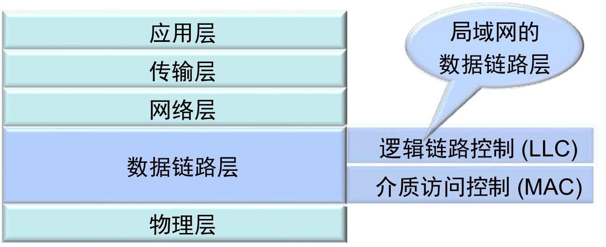
网络通信的底层逻辑
不管是电脑连手机、服务器连路由器，还是跨多个设备通信，本质都遵循一个规律：
- 网络层（比如 IP 层）的视角：只管 “谁要发给谁”—— 直连的设备直接发，不直连的就找中间设备（路由器、交换机）转发，最终总能传到目标。
- 物理层的视角：不管上层数据是什么，都只以 “0/1 比特流” 的形式在物理线路（网线、光纤、Wi-Fi）上传输
- 关键矛盾：网络层需要 “完整无错的数据包”，物理层只给 “可能出错的比特流”，而且相邻设备（比如电脑和交换机、交换机和路由器）之间，必须准确交接数据 —— 这就需要数据链路层来 “搭桥”即保证没有错误的帧数据。
[!note]
相邻结点间，实现正确的数据传输：
- 分帧与组帧 ：数据链路层把网络层的 “数据包” 封装成 “帧”—— 帧就是给比特流加了 “开始标签” 和 “结束标签” 的最小传输单元
- 差错控制：数据链路层给帧加 “校验码”（比如 CRC 校验），接收方收到后核对校验码，错误则要求重发或者丢弃
- 流量控制：让接收方 “反馈进度”，从而控制发送方的发送速率
- 传输协议：制定标准化协议（比如 HDLC、PPP），明确帧格式、校验方式、确认机制等
数据链路层的任务和主要功能、地位
数据链路层的任务：
核心任务是提供相邻结点之间的可靠通信，即无差错的传输数据
- 结点：结点可以是路由器等网络设备，也可以是用户主机或其它业务终端，但是需要“相邻”—— 就是直接连接的两个设备
- 场合：处理相邻节点间的数据传输，只处理相连节点的数据传输
- 对象：传输的数据单元是帧（Frame）
- 目的：将不可靠的物理链路变为可靠的逻辑链路
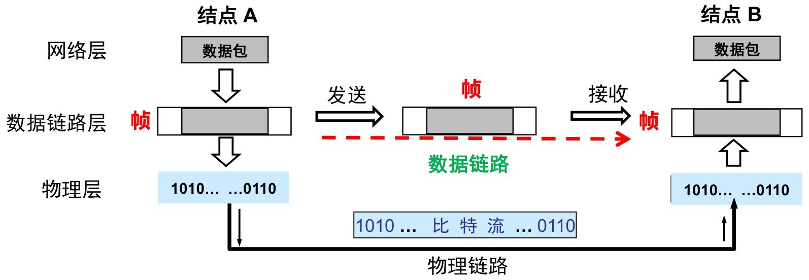
数据链路层的主要功能
- 为网络层提供服务，并且分为无确认无连接､有确认无连接､有确认面向连接
- 链路管理：介质访问控制（如多设备共享信道）； 链路建立、链路维持、链路释放
- 成帧：根据传输协议记忆传输介质，确认帧格式，将数据封装成适合在链路上传送的基本单元（加上帧头帧尾）
- 差错控制：通过校验码或者纠错码处理数据帧的损坏､丢失､重复和乱序，为网络层提供可靠的数据传送服务
- 流量控制：接收方实时反馈 “处理进度”，发送端根据进度控制发送速率，避免信道拥挤、数据丢失
数据链路层在网络中的地位
从 TCP/IP 协议栈来看，数据链路层夹在最底层的物理层和负责跨网络路由的网络层之间，是上层数据 “落地传输” 和底层比特流 “抽象为数据” 的关键衔接
- 网络中的主机､交换机､路由器等都必须实现数据链路层接入网络
- 主机 A 到主机 B 的通信，不管经过多少中间设备，最终都要拆解成 数据链路层中“相邻结点间的帧传输”
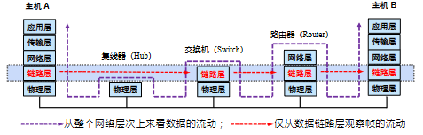
数据链路层提供的服务
围绕 “是否要先建立连接”以及“是否要确认收到” 两个关键问题，适配不同信道可靠性需求：
无确认无连接服务 ：不建立连接，收到帧也不确认
- 发送方直接发帧，不用和接收方提前协商参数；
- 接收方收到后，既不反馈 “已收到”，也不反馈 “没收到”，发完、收完就结束。
- 适用场景：信道靠谱（误码率低，很少传错、丢帧），且要速度的场景
有确认无连接服务：不建立连接，但每帧都要确认
- 不用提前和接收方协商规则，直接发帧，但每发一个帧，接收方必须回一个 “确认消息（ACK）”；
- 如果发送方没收到确认，就认为帧丢了或传错了，会重新发送。
- 适用场景：信道不靠谱（容易丢帧、传错）的场景
面向连接的服务 ：先建立连接，再传数据，每帧都确认
- 通信分三步：① 建立连接：双方协商帧格式、校验方式、传输速率等参数，做好收发准备（类似开通专属快递通道）；② 传输数据：每发一个帧都要确认，确保无错；③ 释放连接：数据传完后，断开连接，释放资源。
- 适用场景：长延迟、高差错的信道
| 服务类型 | 是否建立连接 | 是否需要确认 | 核心优势 | 适用场景 |
|---|---|---|---|---|
| 无确认无连接服务 | 否 | 否 | 传输效率高、延迟低 | 可靠信道（以太网）、实时通信 |
| 有确认无连接服务 | 否 | 是 | 流程简单、可靠性高 | 不可靠信道（Wi-Fi） |
| 面向连接的服务 | 是 | 是 | 全程可靠、适配复杂链路 | 长延迟不可靠信道（卫星通信） |
数据链路层数据单元：帧（Frame）
帧是数据链路层的 “协议数据单元”
- 发送端： “组帧”（打包），给数据加 “帧头”（开始标志、地址）和 “帧尾”（校验码、结束标志），变成标准化的帧
- 接收端：通过 “拆帧”（拆包），识别帧的边界，去掉帧头帧尾，还原成数据包交给网络层；
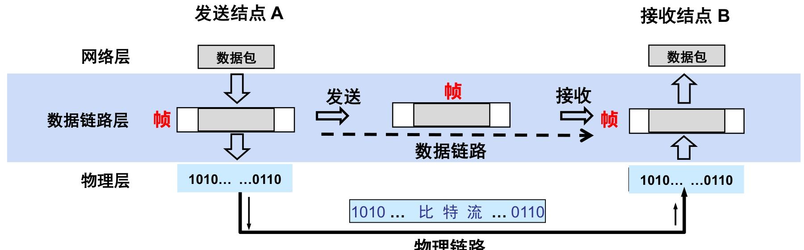
成帧(framing)
成帧的关键是 “帧定界”—— 让接收方从一堆比特流中，精准找到一帧的开始和结束
从而实现分段传输，错误隔离，误差校验，以及数据恢复
不同协议有不同的帧：PPP帧、MAC帧
帧定界（帧同步）的两个核心难题：
- ① 选什么 “定界符”（比如特定字节、比特组合）；
- ② 万一数据本身就包含定界符（比如快递盒里的物品和包装图案一样），怎么避免误判？
成帧方法
| 成帧方法 | 核心逻辑 | 解决冲突方式 | 适用场景 | 优缺点 |
|---|---|---|---|---|
| 字节计数法 | 用计数字段标明帧长度 | 无 | 早期技术 | 简单；极不可靠，已淘汰 |
| 字节填充的标志字节法 | 特定字节（FLAG）当定界符 | 加转义字符（ESC） | PPP 协议、软件实现场景 | 逻辑清晰；硬件实现复杂 |
| 比特填充的标志比特法 | 特定比特组合（如 01111110）当定界符 | 连续 5 个 1 后插 0 | HDLC、USB、硬件实现场景 | 硬件友好；比特级操作稍复杂 |
| 编码违禁法 | 物理层违禁编码当定界符 | 数据中无违禁编码，无需处理 | 以太网（10M/100M/1000M） | 效率高、无冲突；依赖物理层编码 |
目前成帧的主要方法：比特填充的标志比特法和编码违禁法
字节计数法：用一个 “计数字段” 标明本帧的字节数（包括计数字节），接收方按计数截取比特流；但是计数字段可能本身传错
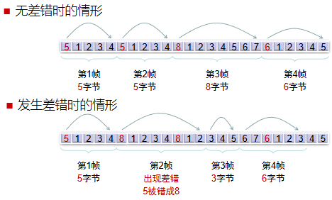
字节填充的标志字节法：用特定字节（比如 FLAG）当 “定界符”，作为帧的开始和结束
开始字节和结束字节可相同也可不同
帧和帧之间可以连续发定界符(FLAG)，用来作同步填充
解决定界符冲突：
- 如果数据本身包含 FLAG，就在 FLAG 前面加 “转义字符（ESC）”即（ASCII字符1BH），表示 “这个 FLAG 是数据，不是边界”；如果数据里有 ESC
- 就给 ESC 也加一个 ESC（避免 ESC 被误判为转义标志）；
简单来说就是，在特殊字符（SOH，EOT，ESC）的前面加上转义符ESC
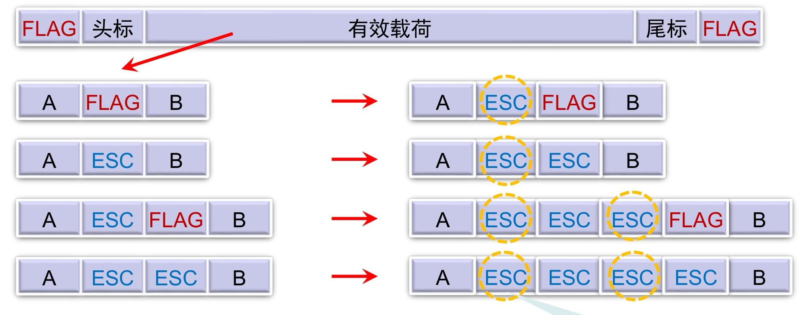
比特填充的标志比特法：用特定比特组合当定界符（比如 HDLC 协议的 01111110），在比特级划分帧边界
对于发送端：比特填充
利用比特位操作，检查数据中的比特流，只要出现 “连续 5 个 1”，就插入 1 个 0；防止和定界符的比特模式 01111110 相同
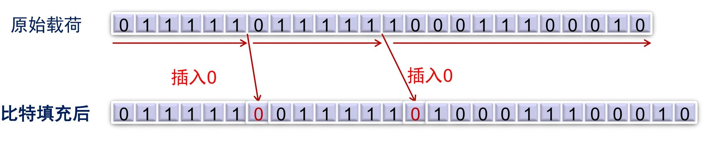
对于接收端则需要恢复数据
- 遇到 “连续 5 个 1”，就看后面的比特 —— 是 0 就丢弃（这是填充的）；是 1 再看接下来的比特：是 0 就是定界符（帧结束），是 1 就是出错；
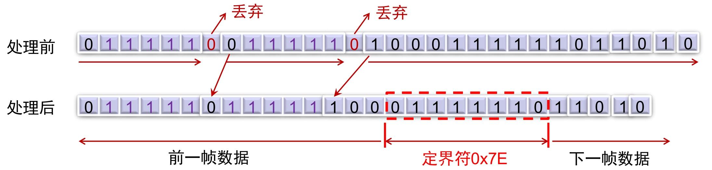
编码违禁法：利用物理层的 “冗余编码规则”—— 有些编码组合在数据传输中是 “违禁的”（不允许出现），就用这些违禁编码当帧的开始 / 结束标志；
仅仅用于采用冗余编码的物理层中实现
- 曼彻斯特编码（10Mbps 以太网）：高 - 高、低 - 低电平是违禁的，用作帧定界；
- 4B/5B 编码（快速以太网）：16 种编码未使用，用作定界符；
- 8B/10B 编码（千兆以太网）：未使用的编码用作定界符和控制码；
信道分配与介质访问控制（X）
多点连接环境（比如 Wi-Fi、集线器组网）中，多个设备共享一条信道，MAC 子层的核心任务就是制定 “使用规则”，避免大家同时用导致冲突，确保信道高效利用。
两种信道分配方式：静态 vs 动态
- 静态信道分配——“分固定工位，各自用各自的”
- 用多路复用技术（比如时分复用、频分复用），把单个信道划分成多个固定的 “子信道”，每个设备分配一个专属子信道，只能在自己的子信道里传输数据。
- 效率极低 —— 网络数据流量大多是 “突发性” 的，各个信道的负载或者工作量不均衡
- 动态信道分配 ——“先到先得 / 按规则排队，灵活用资源”
- 不划分固定子信道，所有设备共享整个信道，根据实时流量动态分配使用权
- 5 个关键假设（协议设计的前提）：
- 流量独立：每个设备的数据流互不影响；
- 单信道：所有设备共用一条物理信道；
- 冲突可检测：能发现两个设备同时用信道的冲突；
- 时间连续或分槽：要么时间连续可用，要么分成固定 “时间槽”（比如分槽 Aloha）；
- 载波侦听：设备能检测信道是否被占用（比如听有没有其他设备传数据）。
- 核心是 “多路访问协议”：即设备如何竞争 / 获取信道使用权，分 3 类协议。
对于动态分配的三类协议的具体内容
竞争协议 ——“先到先得，冲突了再重试”（轻负载高效）
- 纯 Aloha 协议：只要有数据帧要发，直接发送，不做任何检测；靠接收方的 “确认消息” 判断是否成功，没收到确认就重传。
- 分槽 Aloha 协议：把时间分成固定长度的 “槽”（比如每个槽 10ms），设备只能在每个时间槽的开头发送数据。
- CSMA/CD 协议（以太网专用）：对于有线共享信道，先听再发，撞了就停；即发前检测信道是否空闲，空闲则发，检测到冲突则停止发送
- CSMA/CA 协议（无线局域网专用）：对于无线共享信道没法快速检测冲突，所以重点在“避免冲突”；
- 发前侦听：先检测信道是否空闲；
- 空闲等待：信道空闲后，还要等一段 “帧间间隔（IFS）”，再发 “请求发送（RTS）” 帧，通知其他设备 “我要占用信道了”；
- 确认接收：接收方收到 RTS 后，发 “允许发送（CTS）” 帧回应，发送方再发数据；数据发完后，接收方必须发 “确认（ACK）” 帧，确保没丢包。
无冲突协议 ——“按规则排队，绝不撞车”（重负载高效）
适合设备多、数据发送频繁的场景，就像给打印机排好号，按顺序用，完全不冲突。
基本位图协议（按槽投票）：把时间分成 “竞争槽”（比如 8 个槽，对应 8 个设备），每个设备对应一个槽
- 想发数据的设备，在自己对应的槽里发 “1”（表示要占用信道）；
- 所有设备看完所有竞争槽后，按 “槽的顺序” 依次使用信道
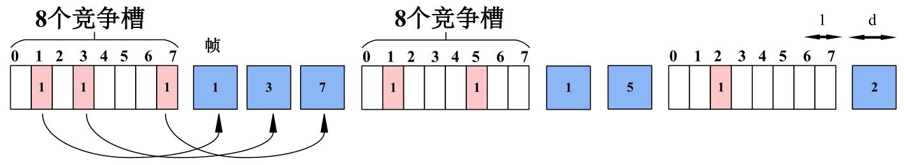
令牌传递协议（令牌即权限）：有一个特殊的 “令牌帧”（就像 “打印机使用权限卡”）在设备间循环传递：
- 只有拿到令牌的设备，才能发送数据；数据发完后，把令牌传给下一个设备；
- 没拿到令牌的设备，只能等待，不能发送。
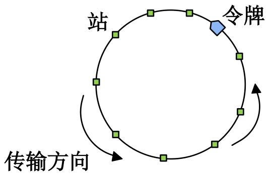
二进制倒计数协议（编号大的先得）：每个设备有唯一的二进制编号
- 想发数据的设备，同时广播自己的编号，从最高位开始比较
- 编号大的直接获得信道使用权
- 其他设备看到比自己编号大的设备抢到时，就放弃竞争
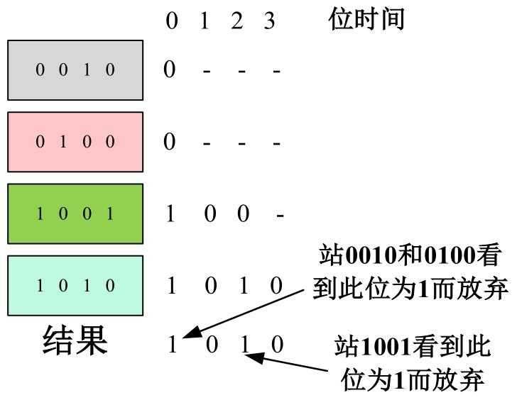
有限竞争协议 ——“轻负载抢，重负载排队”（兼顾两种场景）
低负载时用 “竞争协议”（比如 CSMA），冲突少、延迟短；
高负载时自动切换到 “无冲突协议”（比如令牌传递、位图协议），避免频繁冲突，提升信道效率。
自适应树遍历协议：
- 把设备按 “树状结构” 分组（比如 A/B/C/D/E/F/G/H 分成两层）：
- 低负载时：所有设备都能竞争信道，抢到就用；
- 高负载时：按树的分支依次让每组设备竞争（比如先让上层 A/B/C/D 竞争，抢到的组再让组内设备竞争），避免全员同时抢导致冲突。
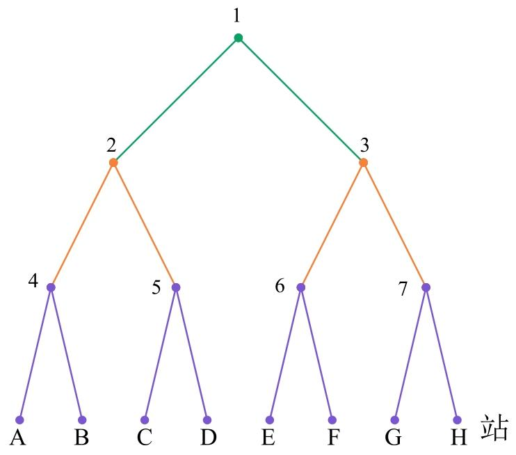
[!tip]
- 静态分配：固定子信道，无冲突但效率低，适配恒定流量场景；
- 动态分配：共享信道，按协议分配使用权，是主流方式；
- 竞争协议：轻负载快（冲突少、延迟短），重负载差（冲突多）；
- 无冲突协议：重负载稳（无冲突、效率高），轻负载差（延迟高）；
- 有限竞争协议：兼顾轻负载低延迟和重负载高效率，适配复杂场景。
数据链路管理
用 “搭建专属通信通道” 的逻辑，把数据链路管理拆成 4 个核心模块，每个模块都对应 “怎么接线（线路配置）、怎么传数据（传输方式）、怎么定规则（线路规程）、怎么管链路生命周期（链路状态管理）”
线路配置
线路配置指的是网络中两个或多个结点通过物理线路连接的具体方式，核心分两种，本质是 “专属线路” 和 “共享线路” 的区别
- 点到点连接：“专属专线，一对一通信”
- 两个结点之间用专用物理线路直接连接
- 信道容量都用于这两个结点间的数据传输
- 严格的 “一对一”点对点通信方式
- 多点连接（广播信道）：“共享线路，一对多通信”
- 两个以上的结点共用同一条物理线路，这条线路是所有结点的 “公共信道”
- 信道容量由所有结点共同使用，需要通过 “复用技术”（比如时分复用、频分复用）划分资源，避免拥挤
- 用专门的共享信道协议（比如以太网的 CSMA/CD、Wi-Fi 的 CSMA/CA）协调结点发送数据，避免冲突
- “一对多” 的广播模式
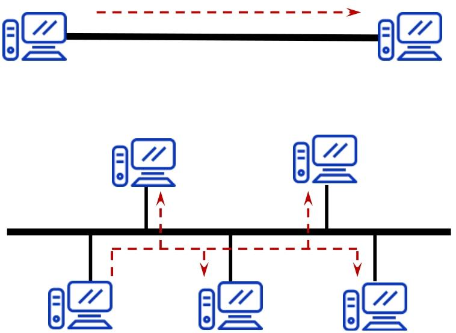
传输方式
传输方式本质是 “比特流从一个设备到另一个设备的传送规则”
按传输方向分：单工、半双工、全双工
单工：“单行线，只能单向传”
- 数据只能从一个设备发、另一个设备收，通信单向不能反向传输
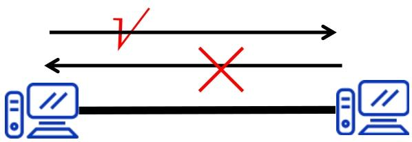
半双工：“双向车道，不能同时走”
- 两个设备都能收发数据，但同一时间只能一个发、一个收
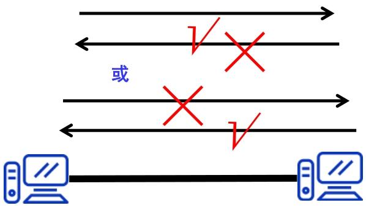
全双工：“双向双车道，可同时走”
- 两个设备能同时收发数据
- 要么链路有两条独立物理路径（一条发、一条收），要么将信道带宽一分为二（复用技术），同时传两个方向的信号
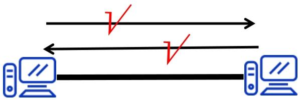
按比特传输方式分：串行传输 vs 并行传输
- 串行传输：“单车道，比特挨个传”
- 每个时钟脉冲只传 1 个比特，只用 1 条线路（或少数辅助线路），比特按顺序依次发送
- 适用场景：短距离（如 USB 线）和长距离通信（如网线、光纤、串口线），是网络通信的主流方式。
- 并行传输：“多车道，比特同时传”
- 每个时钟脉冲同时传多个比特，每个比特用 1 条独立线路
- 缺点：长距离传输时，线路成本高（需多条线路）、捆扎困难、接收端同步复杂（要对齐所有线路的比特）。
- 适用场景：近距离传输（如电脑主机与打印机、主板上的部件互连），不适合长距离通信。
按同步方式分：异步传输 vs 同步传输
异步传输：“自由节奏，字符级同步”
- 以 “字符” 为单位传输，每个字符的传输时间固定，但字符之间的时间间隔不固定
- 每个字符前加 “开始位”，后加 “停止位”，靠这两个位实现同步
- 传输开销大（每个字符都要加同步位）、效率低，适合低速设备。
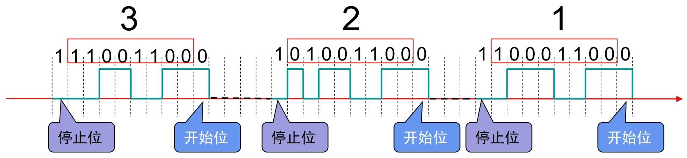
同步传输：“统一节奏，帧级同步”
- 字符或比特流组合成 “数据帧” 成块传输，收发双方按同一时钟节奏同步
- 数据帧结构：包含同步字符（SYN，标识帧开始）、控制域（源地址、目的地址、长度等）、数据域（要传的信息）、错误检查域（检测传输错误）、帧结束标记（END，标识帧结束）
- 实现 “位同步”（对齐每个比特的传输节奏）和 “帧同步”（识别帧的开始和结束）
| 分类维度 | 具体类型 | 核心优势 | 适用场景 |
|---|---|---|---|
| 传输方向 | 单工 | 结构简单、成本低 | 单向通信（广播、打印） |
| 半双工 | 双向通信、成本低 | 低频双向通信（对讲机、早期组网） | |
| 全双工 | 效率高、无等待 | 高频双向通信（手机、交换机） | |
| 比特传输方式 | 串行传输 | 线路少、适配长距离 | 短 / 长距离通信（网线、光纤） |
| 并行传输 | 速度快 | 近距离高速传输（设备内部互连） | |
| 同步方式 | 异步传输 | 无需统一时钟 | 低速设备（键盘、老式打印机） |
| 同步传输 | 效率高 | 高速大量数据传输（以太网、光纤） |
线路规程
线路规程本质是 “数据链路的通信规则手册”，核心负责两件事：一是监视链路建立 / 终止，二是在同一时刻给某个设备分配 “数据传送权”，避免冲突
线路规程可以两种方式实现： 询问/应答方式（ENQ/ACK） ；轮询/选择方式（Poll/Select）
询问 / 应答方式（ENQ/ACK）：“点对点的双向预约”
- 仅用于点对点连接（比如电脑和路由器、两台路由器之间），链路两头的设备级别相同，没有主次之分，任意一方都能主动发起通信。
- 建立会话：启动方（比如站点 A）发 “询问帧（ENQ）”，问接收方（站点 B）“是否准备好接收数据？”；
- 数据传输：接收方如果就绪，回复 “肯定应答帧（ACK）”，启动方就开始发数据帧；如果没就绪，回复 “否定应答帧（NAK）”，启动方稍后再问；
- 终止会话：数据传完后，启动方发 “传输结束帧（EOT）”，链路释放。
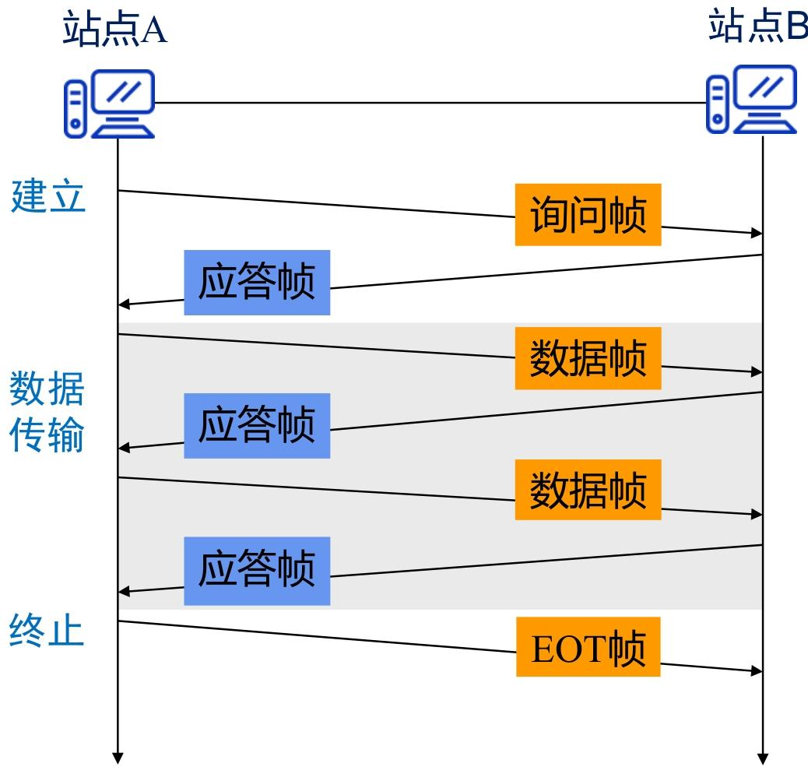
轮询 / 选择方式（Poll/Select）：“多点连接的主次调度”
- 用于多点连接，必须有一个 “主设备”（比如路由器），其他是 “从设备”（比如电脑），主设备统一控制链路。
- 要确定设备是否就绪，还要确定哪一个站点有权使用信道
- 主设备控制链路，主设备发命令，从设备响应
- 轮询：如果主设备希望接收数据
- 选择：如果主设备希望发送数据
- 同时在链路上的每个设备都有一个地址来标识自己
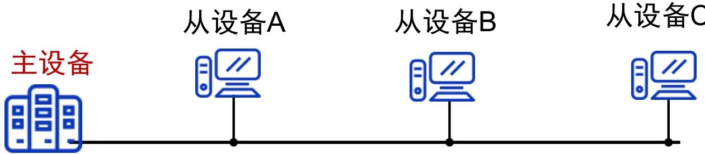
选择模式：
- 主设备想给某个从设备（比如从设备 A）发数据，先发送 “选择帧（SEL）”，明确告诉 “从设备 A 准备接收”；
- 从设备 A 如果就绪，回复 “ACK”，主设备开始传数据帧；
- 如果没就绪，回复 “NAK”，主设备换个时间再试；
- 数据传完后，主设备发 “EOT” 终止
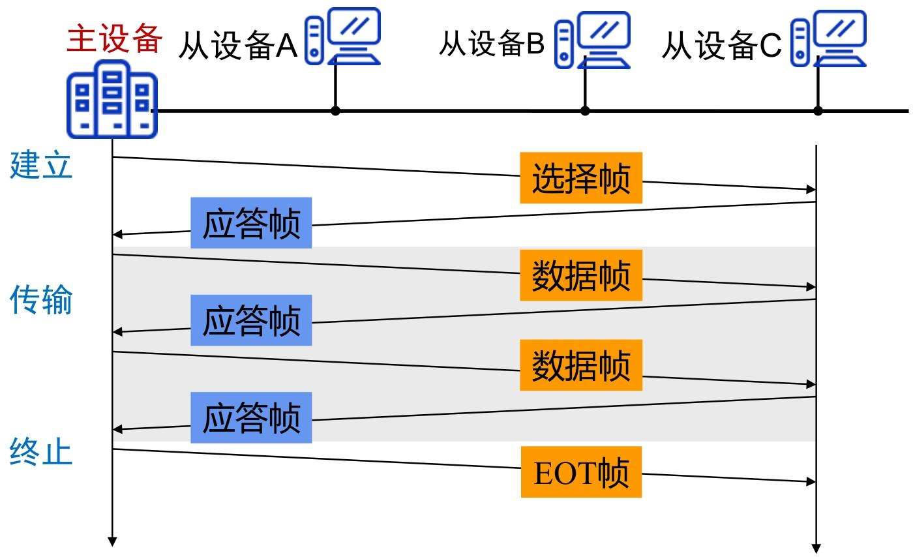
轮询模式：
- 主设备逐个给从设备发 “轮询帧（Poll）”，问 “你有数据要发吗？”；
- 从设备如果有数据，直接发数据帧应答；
- 如果没有，必须回复 “NAK”；
- 从设备数据传完后，发 “EOT” 告知，主设备继续轮询下一个从设备；也可以用主设备发 “时间到” 消息终止轮询。
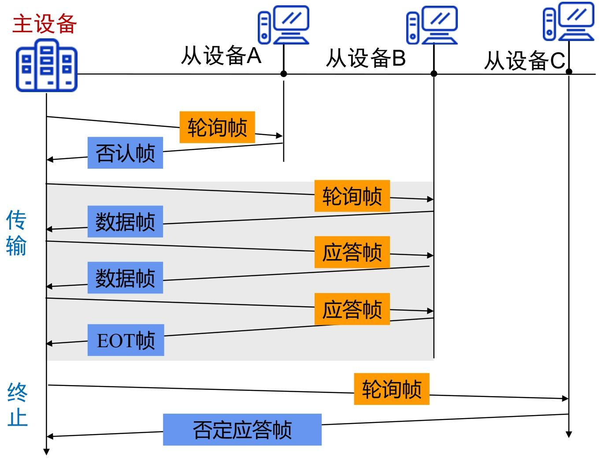
[!tip]
实现方式 适用连接 设备关系 核心逻辑 关键帧 / 信号 询问 / 应答（ENQ/ACK） 点对点连接 平等（无主次） 主动询问对方是否就绪，再传数据 ENQ（询问）、ACK/NAK（应答）、EOT（结束） 轮询 / 选择（Poll/Select） 多点连接 主从关系 主设备调度，从设备响应 Poll（轮询）、SEL（选择）、ACK/NAK（应答）、EOT（结束）
链路状态管理
链路状态管理的核心目标就是：让发送方明确知道接收方是否 “准备好接收”“正在接收” 或 “已完成接收”
- 收发数据前，建立数据链路，确定通信协议
- 数据传输中，维持数据链路，进行差错控制和流量控制
- 完成数据收发后，释放数据链路，回收通信资源
| 阶段 | 核心目标 | 关键动作 | 类比场景 |
|---|---|---|---|
| 链路建立 | 协商规则 + 确认接收就绪 | 交换协商帧 + 状态确认帧 | 拨号接通电话 |
| 链路维持 | 监测状态 + 避免传输故障 | 确认反馈 + 过载控制 + 链路恢复 | 通话中保持连接 |
| 链路释放 | 确认传输完成 + 回收资源 | 发送结束帧 + 释放确认帧 | 挂电话释放线路 |
差错控制和流量控制
差错控制和流量控制是数据链路层保障 “可靠传输” 的两大核心技术 —— 差错控制解决 “数据传错、传丢” 的问题，流量控制解决 “发送方太快、接收方接不住” 的问题
- 差错控制：检测并修正数据传输中的错误，靠 “检测 + 确认 + 重传” 三大手段
- 差错控制主要指错误检测和重传方法
- 错误检测：接收方通过数据帧中的 “校验码”，判断帧是否损坏，出错则不交给网络层。
- 确认（ACK）：接收方收到正确的帧后，给发送方发 “肯定应答”，告知 “已安全收到”。
- 自动重复请求（ARQ）：如果帧损坏，接收方发 “否定应答（NAK）”，催促发送方重传该帧
- 超时重传：发送方发完帧后启动定时器，若超时没收到确认，自动重传该帧
- 对于上述方法的实现要点：携带校验码，发送方进行接收确认和超时重传，接收方则按序接收
- 重传的三种情况：帧破坏；帧丢失；应答帧丢失
- 差错控制主要指错误检测和重传方法
- 流量控制：协调收发双方的速率，不让发送方发得太快，导致接收方缓冲区溢出（数据丢失），主要靠 “接收方反馈调速” 实现
- 基于反馈调整：接收方实时反馈自己的 “接收能力”（比如缓冲区剩余空间），发送方根据反馈调整发送速率
- 依赖确认机制：接收方的 “确认帧（ACK）” 不仅是 “收到信号”，也隐含接收能力的流量信息
差错控制与流量控制的关联与区别
共同点：共享基础技术
都依赖 “接收确认” 和 “超时重传”：确认帧既用于告知 “数据正确”（差错控制），也用于告知 “接收能力”（流量控制）；
超时重传既解决 “帧丢失”（差错控制），也应对 “确认帧丢失导致的速率误判”（流量控制）。
核心区别：解决的问题不同
差错控制多了 “差错检测与纠错” 环节：这是它的核心，重点处理 “数据对错”；
- 流量控制重点是 “速率匹配”：不关心数据本身对错，只确保接收方不被数据 “淹了”。
两种控制都通过以下两种协议落地，兼顾可靠性和效率：
- 停止等待协议：简单直接（发一帧等确认，再发下一帧），同时实现流量控制（等待确认就是限速）和差错控制（错了重传）；
- 滑动窗口协议（又称为连续ARQ协议）：高效灵活（发送方可连续发多帧，不用逐帧等确认），通过窗口大小限制发送速率（流量控制），通过重传机制修正错误（差错控制）。
停止等待协议
停止等待协议是数据链路层最基础的可靠传输协议，核心分 “无错信道” 和 “有错信道” 两种场景，本质是 “发一帧等确认，再发下一帧”
无错信道的停止等待协议：只解决 “接收方接不住”
- 假设为信道的绝对理想状态，物理层比特流完全正确；同时
v_send > v_receive，导致接收方来不及接收 - 协议逻辑：
- 发送方：发完一帧就暂停，不继续发，等待接收方的 “确认帧”（叫 “哑帧”，内容不重要，只当 “收到信号”），收到确认后再发下一帧。数据发完，发送方发送传输结束帧（EOT），通信终止。
- 接收方：收到一帧并处理完成后，立即回复一个确认帧，
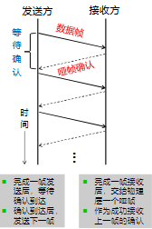
- 假设为信道的绝对理想状态，物理层比特流完全正确；同时
有错信道的停止等待协议：解决 “出错 + 接不住”
前提：信道不靠谱：数据帧可能损坏（比特翻转）、丢失（链路中断）；接收方仍有处理上限：不能接收太快。
基础解决方案：加 “计时器”+“超时重传”：
- 发送方：发完一帧后，立即启动一个计时器（比如设 10ms 超时）。
- 超时重传：如果计时器到期，还没收到接收方的确认，就默认帧丢了或出错了，自动重传这一帧。
- 接收方：收到正确的帧就发确认，收到错误的帧直接忽略（或发否定应答 NAK）
接收方重复收到同一数据帧的两种场景:
- 确认帧（ACK）丢失。比如发送方 A 发帧 A1→接收方 B 收到并处理→B 发 ACK→ACK 在传输中丢了→A 没收到确认，超时重传 A1→B 收到重复的 A1。
- 超时时间设太短。比如 A 发 A1 后，计时器很快超时→A 重传 A1→之后 B 才收到第一次的 A1→又收到重传的 A1→重复。
对于“重复帧”的解决方案：
给帧加 “1 位序号（SEQ=0/1）”
- 发送方：每发一帧，都带一个序号（0→1→0→1 循环）
- 接收方：初始化时 “期待接收 0 号帧”，收到帧后先查序号：
- 序号是 “期待的序号”：说明是新帧，处理后发确认，同时把 “期待序号” 换成下一个（0→1 或 1→0）。
- 序号和 “期待的序号” 不一致：说明是重复帧，直接丢弃，同时重发上一个正确帧的确认
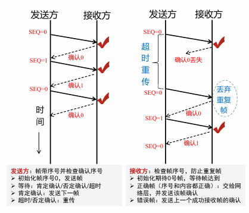
停等 ARQ：自动重复请求，或带有重传的肯定确认
基于停止等待协议实现流量控制
基于停止等待协议实现的流量控制，核心逻辑是 “用确认帧控制发送节奏”，强制发送方和接收方速率匹配，避免接收方因处理能力不足导致数据溢出
应答帧就是 “速率开关”—— 只有收到开关信号（ACK），发送方才会继续发送；即“接收方的处理速度决定了发送方的发送速度”
- 协议简单，但是传输效率低，线路带宽利用率低
完成一帧发送所需的最短时间
t_W = t_I + 2t_P + 2t_Proc + t_S
其中，t_I 是发送数据帧的有效时间，而 2t_P + 2t_{Proc} + t_S 都是等待和应答的开销时间。
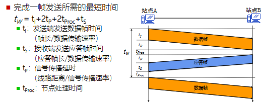
[!note]
信道利用率：信道被占用的时间和总时间之比，即信道被 “有效传输数据” 占用的时间，占总时间的比例，值越大说明信道没被浪费。
有效数据传输率：单位时间内传输的有效数据位数，即单位时间内，实际传输的有用数据比特数（去掉帧头帧尾的有效数据 N），不是链路的标称速率。
- 无差错情况下：帧不会丢失、不会损坏，不用重传，是协议性能的上限
- 信道利用率：
P = t_I / t_W，即发送端发送数据帧时间/发送一帧总时间- 有效数据传输率：
S = N / t_W，即一帧有效比特位/一帧总时间- 有差错情况下：实际信道会出错（帧损坏 / 丢失，概率为 p），需要重传，性能会下降
- 正确传一帧的平均时间 tV：
t_V = t_W / (1 - p),其中p为出错率- 系统最大吞吐量λmax(每秒成功发送帧数）：
λmax = 1 / t_V = (1-p)/t_W- 极限吞吐量M：
M = 1 / t_I- 系统传输效率
η:实际吞吐量和 “理论极限吞吐量” 的比值：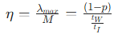
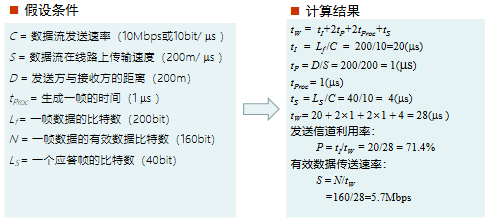
[!tip]
- 无错场景：协议性能由 tW 决定，传播延时 *tP* 越长，*tW* 越大，利用率越低
- 有错场景：出错率 p 越高，重传次数越多，性能下降越明显；同时传播延时的影响会被放大。
- 本质问题：停止等待协议的低利用率，根源是 “发一帧等一帧”，信道大部分时间在空闲等待 —— 这也是滑动窗口协议（GBN/SR）要解决的核心痛点。
基于停止等待协议实现差错控制
为实现差错控制，在停止等待协议中采用自动重复请求（停等ARQ ）
- 数据帧丢失（对应图中
帧丢失 超时重传部分）- 站点 A 发送完数据帧 1 后，立即启动定时器；定时器到期时，仍未收到站点 B 的应答帧 → A 判定 “帧丢失或出错”，重传数据帧 1。
- 应答帧丢失（对应图中
应答帧丢失 超时重传部分）- 重复帧处理：站点 B 收到重传的数据帧 1 → 检查序号，发现当前期望接收的是帧 0（因为已经收过帧 1 了），判定这是重复帧 → 直接丢弃该帧，同时重发应答帧 0（确保 A 能收到确认）。
- 数据帧破坏
- 接收方处理帧时发现错误，发送否定应答帧给发送方请求重发
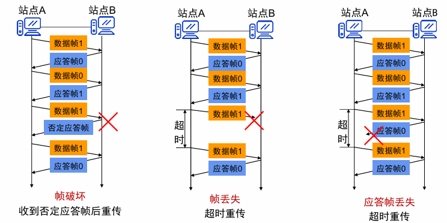
解决 “帧丢失、重复帧、差错重传” 的核心保障：
- 发送端保留帧备份，直到接收确认帧
- 帧序号 0/1 交替：让接收方区分新帧和重复帧，防止重复帧接收
- 否定应答帧（NAK）：接收方收到损坏的帧（校验失败），直接发 NAK请求重发
- 定时器是核心保障：定时器的超时时间要略大于 “帧往返的总时间”，是检测帧丢失、触发重传的关键机制
对于停止等待协议：信道利用率低，延迟高，主要就是 “发一帧等一帧”，信道空闲
滑动窗口协议
滑动窗口协议的核心是打破停止等待协议 “发一帧等一帧” 的限制
允许发送方在未收到确认前连续发送多帧，用 “窗口” 机制控制并发帧数，既提升信道利用率，又实现流量控制和差错控制
窗口本质是发送方 / 接收方存放数据帧的缓冲区范围，对可以连续发送的最多帧数(已发出但未确认的帧)作限制
- 为了应对突发性流量，发送窗口和接收窗口均可以设置大一点
- 窗口大一点，利于区分帧序号循环产生的新帧和重传的帧，避免重复接收
对于发送方和接收方的窗口具体含义：
发送方在收到应答前可以连续发送若干帧
对于发送方窗口：分为两个部分已发送未确认的帧 + 未发送但可发送的帧
- 发送限制：窗口大小 = 最大并发帧数；窗口满了就暂停，等收到确认再 “滑动窗口”，释放新的发送名额。
- 窗口滑动：收到确认后，窗口整体右移，移出已确认的帧，纳入新的待发送帧。
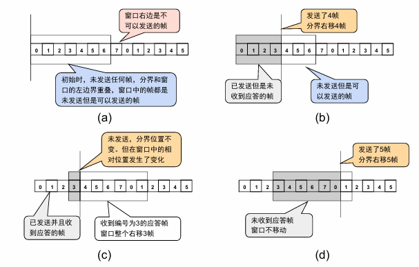
接收方窗口：分为两部分 ——已接收未确认的帧 + 未接收但可接收的帧。
- 接收限制：只有落在窗口内的帧才接收，窗口外的帧直接丢弃。
- 窗口滑动：发送确认后，窗口整体右移，移出已确认的帧，纳入新的可接收帧。
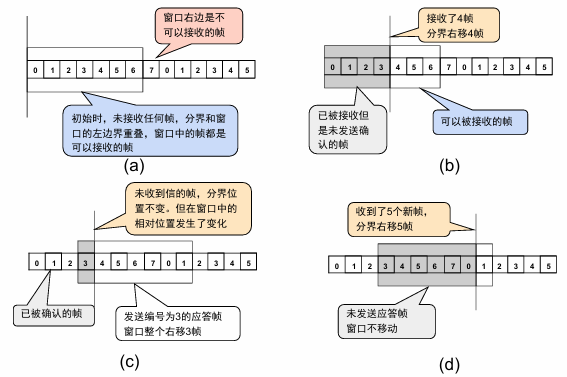
[!tip]
- 帧序号循环复用：帧编号采用 模 n 方式（比如 n=8，编号 0~7 循环），窗口大小 ≤ n-1（避免新帧和重传帧序号混淆）。
- 累积确认：接收方不用逐帧确认，而是用 1 个 ACK 帧确认 “所有≤x 的帧都已正确接收”，ACK 序号 x 表示 “下一个期望接收的帧序号”（比如 ACK=3，代表 0、1、2 号帧都收好了，要收 3 号帧）。
- 接收窗口驱动发送窗口：发送窗口的滑动完全依赖接收方的确认 —— 接收方确认越多，发送方窗口滑动越多，能发的新帧就越多。
- 对于接收窗口和发送窗口的大小限制：W_T + W_R <= 2^n，其中
n即帧序号的比特数；根据此可以推出GBN以及SR的窗口大小关系
对于滑动窗口协议中的差错控制：
- 回退 N 帧（GBN）
- 核心逻辑：接收方只按序接收帧，一旦某帧出错 / 丢失，后续帧全部丢弃；发送方收到否定确认（NAK）或超时后，从出错帧开始，重传窗口内所有未确认的帧。
- 特点：实现简单，接收方无需缓存乱序帧；但重传效率低（一帧错，多帧重传）。
- 选择重传（SR）
- 核心逻辑：接收方会缓存窗口内的乱序正确帧；发送方收到 NAK 后，只重传出错的那一帧，不用重传后续帧。
- 特点：重传效率高，信道利用率更高；但接收方需要更大的缓冲区，实现更复杂。
回退 N （GBN）协议
回退 N 帧协议（Go-Back-N，简称 GBN）是滑动窗口协议的一种实现，核心目标是在提升信道利用率的同时，简化接收方逻辑，代价是 “一帧出错，后续帧全部重传”。
GBN 的设计围绕 “连续发送 + 按序接收 + 出错全重传” 三个关键词展开，本质是用发送方的 “批量重传” 换取接收方的 “极简缓存”。
- 出错全部重传：只要某一帧出错或丢失，发送方就从出错帧开始，重传窗口内所有未被确认的帧（包括出错帧之后的正确帧）。
- 接收方按序接收：接收窗口大小固定为
1，只能接收当前期望序号的帧。- 收到期望帧：正常接收，发送累积确认（ACK，确认当前帧及之前所有帧），并更新期望序号。
- 收到出错 / 乱序帧：直接丢弃该帧及后续所有帧，不发送任何确认（或发送否定确认 NAK）。
- 发送方超时重传：发送方为最早未确认的帧设置定时器，超时后重传窗口内所有未确认帧。
基本流程：
发送方维护一个发送窗口（大小 > 1），窗口内的帧可以连续发送，无需等待逐帧确认。
接收方维护一个接收窗口（大小 = 1），仅接收与 “期望序号” 匹配的帧。
[!important]
- 发送方收到累积确认（ACK）后，滑动发送窗口，纳入新的待发送帧；若定时器超时，回退到出错帧的位置，重传窗口内所有未确认帧，即从上一个确认帧后面开始重发
- 而接收方则在接收到正确的帧N时，为帧N发送ACKn确认信号，如果接收的是重复帧或者错误帧，则发上一个正确帧的确认ACK信号，告诉发送方接收到哪一个帧
- 累积确认（ACK）：若有ACKn发送, 则n号帧和前面所有帧均已按序接收。(或：接收窗口停在n处, 则n-1号帧和前面所有帧均已按序接收)
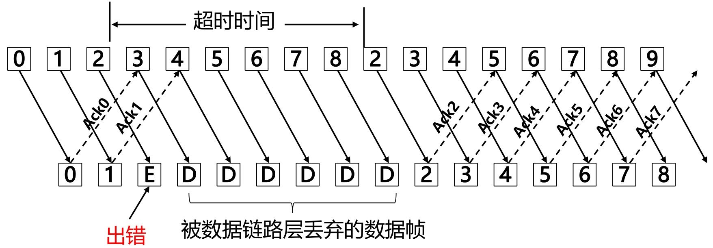
三种差错情况的处理：
差错情况 1：帧破坏（数据帧损坏）
场景：发送方发帧 0~4（窗口大小 = 5），其中帧 3 损坏。
- 接收方动作：收到帧 3 时校验出错，直接丢弃帧 3，同时丢弃后续的帧 4；不发送 ACK（或发送 NAK3）。
- 发送方动作：帧 3 的定时器超时，重传帧 3 及后续的帧 4（尽管帧 4 是正确的）；接收方收到重传的帧 3、4 后，按序接收并发送 ACK5（确认帧 0~4）。
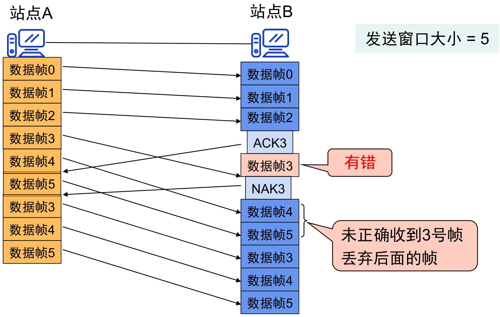
差错情况 2：数据帧丢失
场景：发送方发帧 0~4，其中帧 2 丢失。
- 接收方动作：没收到帧 2，后续收到帧 3、4 时，因是乱序帧，直接丢弃；发送 NAK2或者ACK1，表示2之前的帧已经收到。
- 发送方动作：收到 NAK2 或定时器超时，重传帧 2、3、4；接收方按序接收后发送 ACK5。
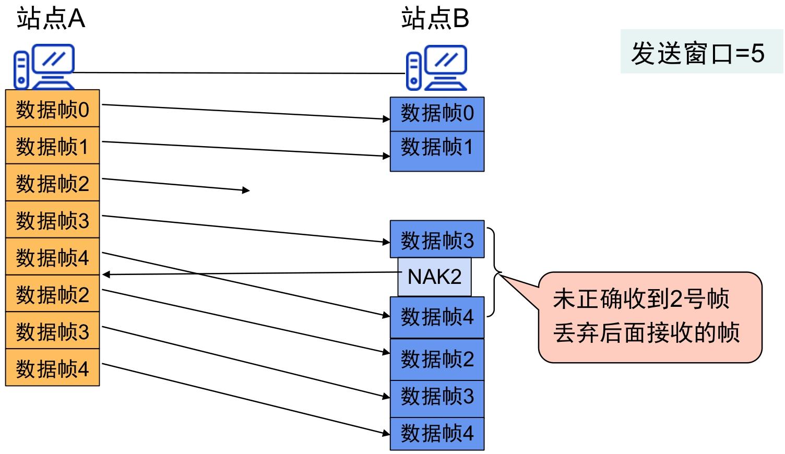
差错情况 3：应答帧（ACK）丢失
场景：发送方发帧 0~2，接收方正确接收并发送 ACK3，但 ACK3 丢失。
- 发送方动作：帧 0 的定时器超时，重传帧 0、1、2。
- 接收方动作：此时期望序号是 3，收到的帧 0、1、2 都是乱序帧，直接丢弃，并重发 ACK3；发送方收到 ACK3 后，停止重传并滑动窗口。
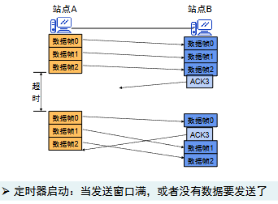
对于回退N协议的窗口大小与编号范围的关系：
BN 的帧编号采用模 n（比如 n=8，编号 0~7 循环），发送窗口大小必须 ≤ n-1：窗口大小≤n-1 时，发送窗口内的帧序号范围，与 “下一轮发送” 的帧序号范围不会重叠；
窗口大小=接收窗口大小+发送窗口大小
| 窗口大小情况 | 协议是否可行 | 原因 |
|---|---|---|
| 窗口大小 > n | 不可行 | 序号循环后，新帧和重传帧序号完全重叠，无法区分 |
| 窗口大小 = n | 不可行 | 应答帧丢失时，接收方会把重传帧误判为新帧（如图 72 示例） |
| 窗口大小 = n-1 | 可行 | 序号不会完全重叠，接收方能区分新帧和重传帧（如图 73 示例） |
| 窗口大小 < n-1 | 可行 | 效率略低，但兼容性更好 |
窗口尺寸等于n时,应答帧丢失时协议失败
即接收方无法分别接收的帧是重发的旧的帧还是下一个滑动窗新的帧
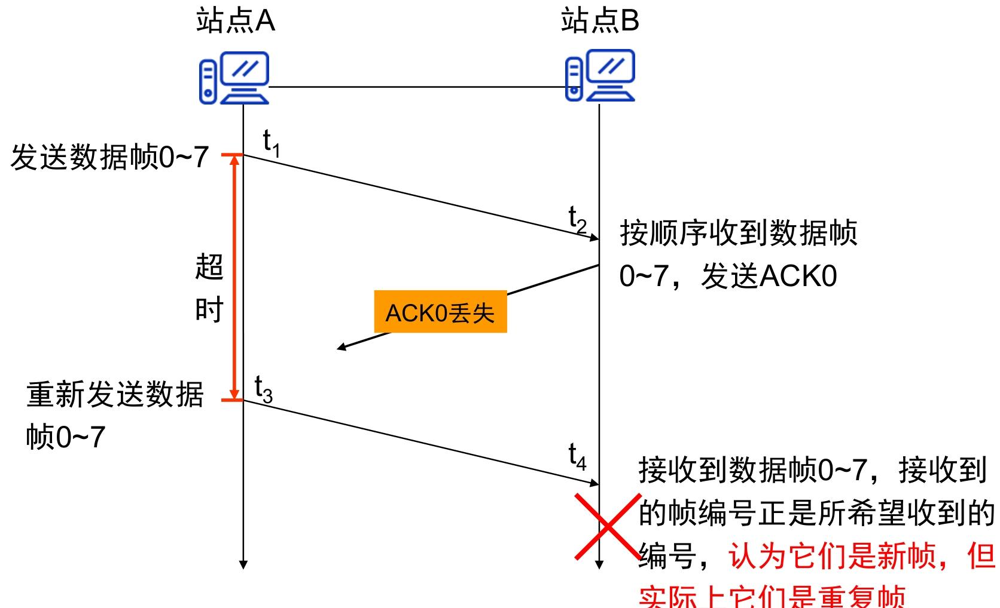
窗口尺寸等于 n-1 时,协议成功
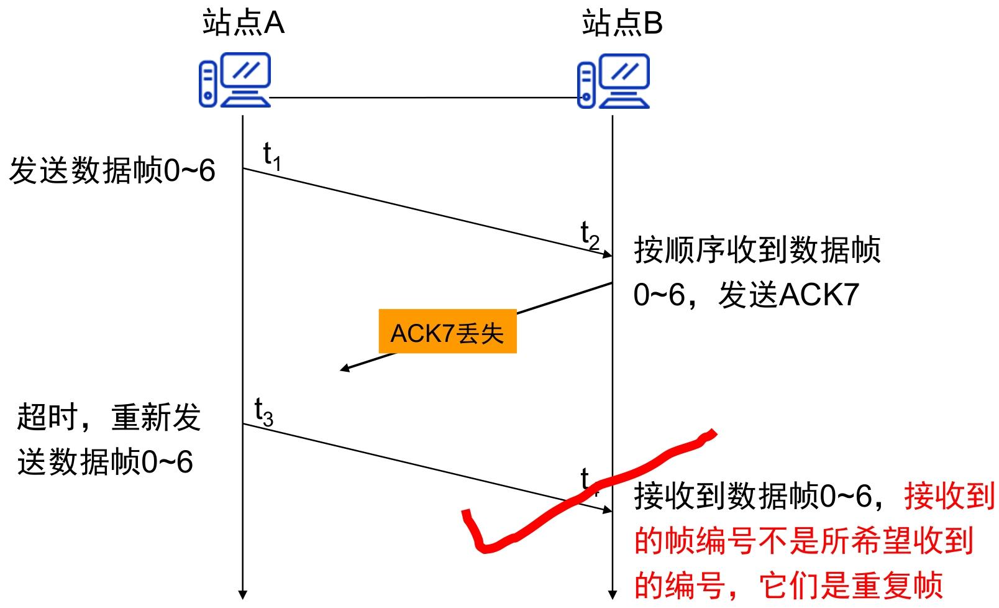
选择拒绝自动重复请求（SR）
核心逻辑是 “只重传出错 / 丢失的帧，不浪费带宽重传正确帧”
发送方连续发送多帧（窗口内），若某帧出错 / 丢失，仅重传该帧，后续已正确发送的帧无需重传；
接收方会缓存窗口内的乱序正确帧，待缺失帧补全后按序交给上层。
- 对比回退 N 帧（GBN）：GBN 是 “一帧错，全重传”，SR 是 “错哪帧，传哪帧”
适用前提：
- 接收窗口大小＞1：能缓存乱序到达的正确帧，不能像 GBN 那样仅按序接收。
- 接收方需排序功能：缓存乱序帧后，按序号重组。
- 发送方需查找机制：能精准定位出错帧，单独重传（而非重传整个窗口）。
优点：避免重传正确帧，信道利用率高，尤其适合出错率较高的场景。
缺点：接收方需更大缓冲区存储乱序帧，实现复杂度高
三类差错的处理流程：数据帧损坏，数据帧丢失，应答帧（ACK）丢失
差错 1：帧破坏（数据帧损坏）
流程：
- 发送方 A 连续发帧 0、1、2、3、4、5；
- 接收方 B 收到帧 2 时校验出错（Step1：错误检测），其他帧（0、1、3、4、5）正确，缓存这些帧；
- B 发送否定应答（NAK2），告知 A “帧 2 损坏”（Step2：发送否定应答）；
- A 收到 NAK2 后，仅重传帧 2（Step3：重传出错帧）；
- B 收到重传的帧 2，补全序列，按序交给上层，发送 ACK5（确认 0~5 帧均收到）。
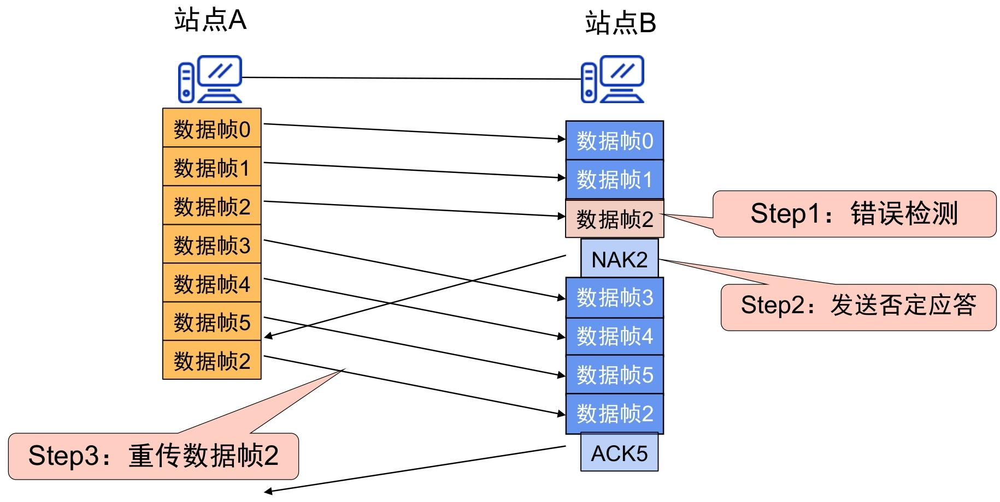
差错 2：数据帧丢失
流程：
- 发送方 A 发帧 0、1、2、3、4、5，其中帧 2 在传输中丢失；
- 接收方 B 收到帧 0、1、3、4、5，发现帧 2 缺失，缓存已收帧，发送 NAK2；
- A 收到 NAK2（或帧 2 超时），仅重传帧 2；
- B 收到帧 2 后补全序列，发送 ACK5 确认。
- 特殊情况：若丢失的是最后一帧（如帧 5），接收方不会主动反应，发送方因未收到对应确认，超时后重传该帧。
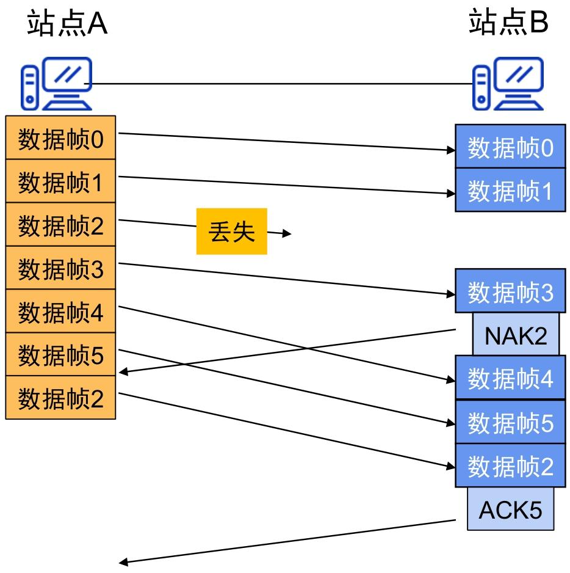
差错 3：应答帧（ACK）丢失
流程：
- 发送方 A 发完窗口内所有帧（如 0~5），启动超时定时器；
- 接收方 B 正确接收所有帧，发送 ACK5，但 ACK5 在传输中丢失；
- A 超时未收到确认，将窗口内所有 “未确认帧”（此处为 0~5）重传一遍；
- B 收到重传帧后，通过序号识别为重复帧，直接丢弃，并重发 ACK5；
- A 收到 ACK5 后，停止重传，滑动窗口。
[!tip]
窗口大小与帧编号范围的关系:
- 如果帧的编号范围是0到n-1(即模n编号)，则发送窗口尺寸和接收窗口尺寸之和应小于或等于
n
- 发送窗口大小（Wt） + 接收窗口大小（Wr） ≤ n（帧编号范围 0~n-1）；
如果要求发送窗口和接收窗口大小相等，则窗口尺寸应该小于或等于
n/2
- 若要求 Wt=Wr（常用场景），则 Wt=Wr ≤ n/2。
发送窗口尺寸太大,协议会失败
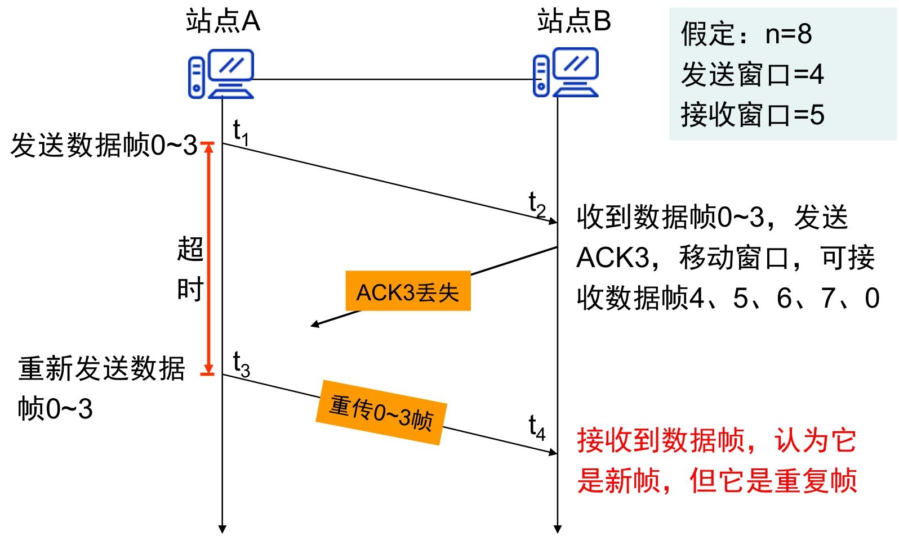
接收窗口尺寸太大,协议失败
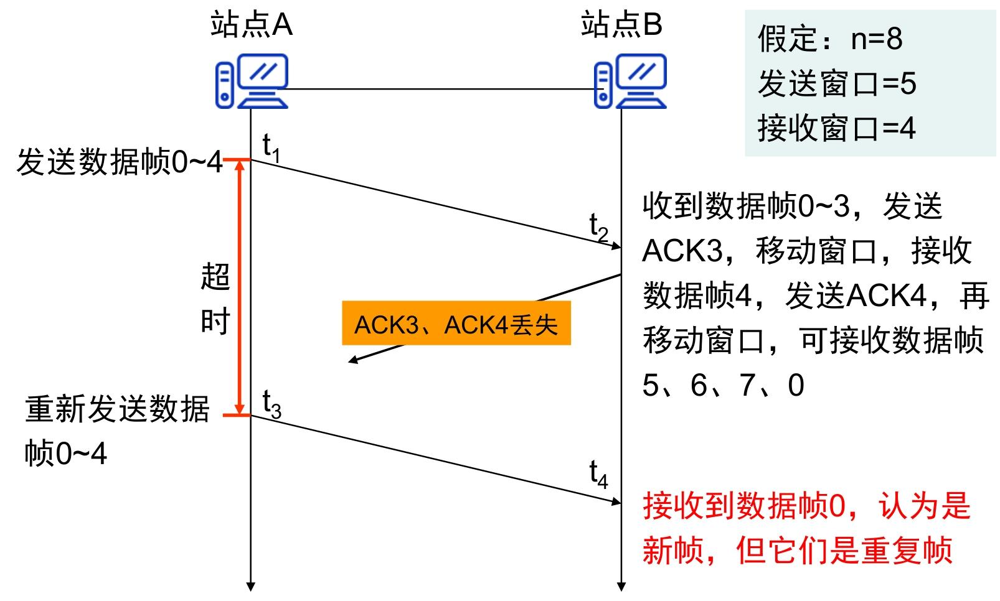
回退 N 帧（GBN）协议的传输效率
- 传输效率与差错率有关，无差错时，p=0，滑窗协议的传输效率 η=100%；
- 有差错时，传输效率与传送一帧的总时间和发送端发送一帧的时间之比有关，如果线路传输延时、应答帧时间越长，则传输效率下降越多
延时比t_W / t_I：传播 / 应答延时越长，效率越敏感
- 长延时场景下，GBN 的连续发送能抵消重传开销，效率远超停止等待。
- 短延时场景下，等待时间占比低，GBN 的优势不明显。
窗口大小的选择
窗口大小n的核心作用是 “填满链路延时”，避免发送方过早等待，需满足：n*tI >= tI+tS+2*tP
- 窗口太小：发送方发完窗口内帧后，还没收到确认，只能等待，链路空闲，效率下降。
- 窗口太大：需要更大缓冲区存储未确认帧，增加设备成本，且超过链路承载能力后，效率不再提升（边际效益递减）。
数据链路控制协议
数据链路控制协议是数据链路层的核心执行标准，负责规范帧格式、链路管理、差错控制等关键操作
IEEE 局域网参考模型
IEEE 局域网模型仅涉及 OSI 的物理层和数据链路层，并对这两层进一步拆分，上层（网络层及以上）与 OSI 模型保持一致：
| OSI 模型 | IEEE 局域网模型 | 核心功能 |
|---|---|---|
| 网络层及以上 | 网络层及以上 | 保持原有功能（如路由、数据传输控制），与底层局域网类型无关 |
| 数据链路层 | 逻辑链路控制子层（LLC，802.2） | 提供统一接口，屏蔽 MAC 子层差异，处理流量控制、差错控制 |
| 媒体访问控制子层（MAC） | 适配具体传输介质，定义信道访问规则、帧格式、物理地址（MAC 地址） | |
| 物理层 | 介质访问单元（MAU，上子层） | 实现物理信号的收发、编码解码（如曼彻斯特编码）、链路激活 |
| 介质说明（下子层） | 定义物理介质特性（如电缆类型、接口标准、传输速率） |
对于MAC子层，IEEE 802.3（以太网）、802.4（令牌总线）、802.5（令牌环）、802.11（无线 Wi-Fi），每个标准对应专属的 MAC 子层实现。
而LLC子层，为网络层提供统一的服务接口，屏蔽不同 MAC 子层的差异，让上层协议（如 IP）无需关心底层的局域网是以太网还是令牌环。
逻辑链路控制子层LLC
局域网 LLC 子层（逻辑链路控制） ，本质是 LLC 作为 “上层统一接口、下层适配 MAC” 的中间层，解决不同局域网（以太网、令牌环等）的互连兼容问题
- LLC 子层位于网络层和MAC 子层之间
- 向上：给网络层提供统一的服务接口，让上层协议（如 IP）不用关心底层是以太网还是令牌环；
- 向下：屏蔽不同 MAC 子层的差异（比如以太网的 CSMA/CD、令牌环的令牌传递），适配各种局域网类型；
- 复用：让一个站点的多个进程（如浏览器、聊天软件）通过不同 “服务访问点（SAP）”，共享同一个 MAC 帧资源通信。
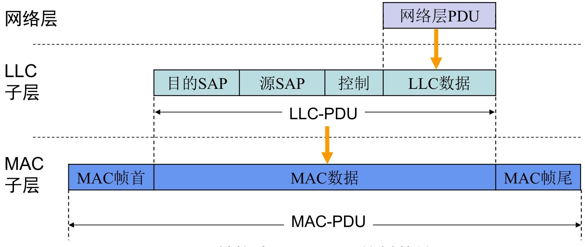
LLC-PDU（LLC 帧）的核心结构
LLC 帧是 LLC 子层的协议数据单元，结构简单且标准化，核心由 4 个字段组成：
DSAP目的SAP（7位） + SSAP源SAP（7位） + 控制字段（8/16位） + LLC数据（网络层PDU）
- LLC 数据：本质是网络层传递下来的数据包（如 IP 数据报），是 LLC 帧的 “有效载荷”；
- 整个 LLC-PDU 会被嵌入到 MAC 帧的 “MAC 数据” 字段中，再加上 MAC 帧首（目的 MAC、源 MAC 等）和帧尾（CRC 校验），形成完整的传输单元，最终通过物理层发送。
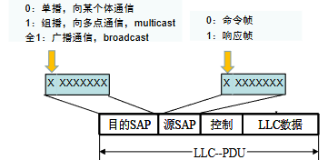
LLC 的三种帧类型
信息帧（I - 帧）
控制字段结构：1 位（0，I 帧标识） + 7 位 N (S)（发送序号） + 1 位 P/F（是否结束发送） + 7 位 N (R)（期望接收的下一个序号）；
功能：传输用户数据（LLC 数据字段），同时通过序号实现流量控制和差错控制（和滑动窗口协议逻辑一致）。
监管帧（S - 帧）
控制字段结构：2 位（10，S 帧标识） + 2 位 SS（类型码） + 4 位保留位 + 1 位 P/F + 7 位 N (R)（确认序号）；
- 类型码含义：00 = 接收就绪（RR，确认数据已收），10 = 接收未就绪（RNR，让发送方暂停），01 = 拒绝（REJ，要求重传）；
功能：仅负责流量控制和差错控制，无信息字段（不传输用户数据）。
无编号帧（U - 帧）
控制字段结构：2 位（11，U 帧标识） + 2 位 MM（功能码） + 1 位 P/F + 3 位 MM（扩展功能码）；其中功能码一共
5位- 功能：链路管理（如建立连接、释放连接），不涉及序号控制，适用于简单的链路控制场景。
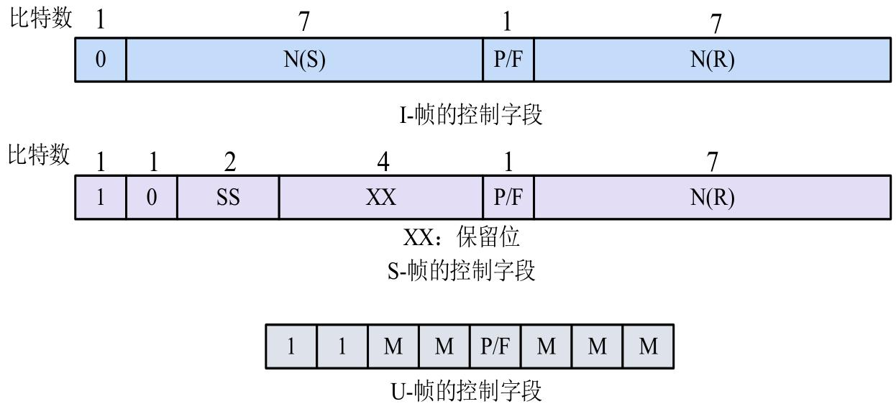
[!tip]
与 HDLC 帧的核心区别
- 无 “选择拒绝帧（SREJ）”：LLC 只支持 “拒绝帧（REJ）”，即一帧出错需重传后续所有帧（类似 GBN 协议）；
- 无 CRC 校验：LLC 帧本身不做差错检测，CRC 校验由下层的 MAC 子层完成，LLC 仅负责接收 MAC 子层校验通过的帧。
LLC 提供的三类服务
无确认无连接服务
核心逻辑：发送方发完帧就结束，不需要接收方回复确认；
- 差错 / 流量控制：由高层协议（如 TCP）负责，LLC 不处理；
适用场景：信道误码率低、实时性要求高的场景（如有线以太网）。
有确认无连接服务
核心逻辑：每发送一帧，都需要接收方单独回复确认（ACK），确保帧被正确接收；
- 特点：无需建立连接，但单帧可靠；
适用场景：信道不可靠的场景（如无线 Wi-Fi，802.11 协议依赖此服务）。
有确认面向连接服务
核心逻辑：通信前先建立连接（通过 U - 帧协商），数据传输时每帧都需确认，结束后释放连接；
- 特点：连接导向，全程可靠；
- 适用场景：无复杂上层协议的简单终端（如蓝牙设备、工业控制终端），直接基于链路层通信。
介质访问控制协议
介质访问控制（MAC）协议的核心是解决 “多设备共享信道时的使用权分配” 问题，避免信号冲突，确保通信有序
以太网
以太网拓扑结构的核心是 “共享介质的广播信道”，随技术发展从总线形演进为星形，同时通过 CSMA 机制减少共享信道的冲突
IEEE 802.3 把以太网分为两类，核心差异在传输方式：
- 基带：直接用数字信号传输数据（比如 0 和 1 的电信号），是目前最常用的类型；
- 宽带：用模拟信号传输（类似有线电视的信号），现在很少使用，重点关注基带即可。
[!tip]
基带类的 5 个标准，核心是 “速率 + 传输介质” 的组合，命名有规律（以 “10Base-T” 为例）：
- “10”：代表传输速率是 10Mbps（100Base-T 就是 100Mbps）；
- “Base”：代表基带传输；
- 最后一位（5/2/T）：代表传输介质（5 = 粗同轴电缆、2 = 细同轴电缆、T = 双绞线）。
基带传输用 曼彻斯特编码 把数字信号（0 和 1）转换成物理信号
每个接入以太网的设备（电脑、服务器等）都必须装 NIC（网络接口卡），也就是常说的 “网卡”：
- 安装位置：通常内置在设备内部（比如电脑主板上的集成网卡）；
- 唯一标识：NIC 上固化了一个 6 字节（48 位）的物理地址（即 MAC 地址），全世界任意两个 NIC 的 MAC 地址都不重复，就像设备的 “身份证”，用来在以太网中精准识别目标设备。
以太网拓扑结构
以太网拓扑结构随技术发展从总线形演进为星形，核心围绕 “共享介质的广播信道” 本质，优化传输可靠性与可维护性
- 1990年前的以太网,使用同轴电缆,采用总线形拓扑结构
- 比如对应 10Base5（粗同轴电缆）和 10Base2（细同轴电缆）标准，同时为典型的共享介质广播信道
- 1990 年,IEEE 制定出802.3i标准,使用双绞线的星形拓扑（物理上是星形，但是逻辑上还是总线形，因为集线器是共享介质广播信道）
- 通过双绞线（常用两对线）连接到中心设备 “集线器（Hub）”，站点侧采用 RJ-45 接头连接网卡（NIC），形成 “中心辐射” 结构
- 仍为共享介质广播信道—— 集线器不做数据筛选，会将一个站点的信号转发到所有端口，所有站点共享集线器总带宽
以太网CSMA/CD
当多个用户不加控制同时访问共享信道时，会由于不同信号叠加而相互破坏，导致信号会产生严重的失真，所以需要处理共享广播信道以太网的冲突问题，比如载波侦听多路访问CSMA
CSMA（载波侦听多路访问）是共享信道的基础介质访问机制，核心是 “发送前先侦听”；
[!tip]
- 多路访问（MA）：多个站点共享同一信道，一个站点发送的数据会广播到所有站点，无集中管制，依赖接收方响应判断数据是否完好。
- 载波侦听（CS）：站点发送数据前，通过检测信道电压判断是否 “忙碌”（有无其他站点传输信号）。
- 信道空闲则直接传输；信道忙碌则避让一段时间后重试，减少冲突概率。
依据避让时间的选择方法,CSMA可分为三种:
| 类型 | 核心逻辑 | 特点 |
|---|---|---|
| 非坚持 CSMA | 检测到信道忙，随机等待一段时间后再侦听 | 冲突概率低，但信道利用率可能偏低 |
| 坚持 CSMA | 检测到信道忙，持续侦听，一旦空闲立即发送 | 信道利用率高，但多站同时抢占易冲突 |
| P - 坚持 CSMA | 检测到信道空闲，以概率 P 直接发送，以概率（1-P）等待一个时隙后再尝试 | 平衡利用率与冲突概率，适配时隙化信道 |
即使先侦听，仍会因 “信号传播延迟” 产生冲突
所以必须采用CSMA/CD
CSMA/CD 是 IEEE 802.3 标准的核心，在 CSMA 基础上增加 “冲突检测” 和 “冲突处理”，形成 “侦听 - 发送 - 检测 - 重传” 的闭环，适用于半双工共享信道以太网。
- 冲突检测：站点发送数据的同时，持续侦听信道 —— 若检测到信号叠加失真（电压异常），立即判定为 “冲突”。
- 冲突处理：
- 立即停止发送数据，避免无效占用信道；
- 发送 “阻塞信号”，通知其他站点信道冲突，防止后续误发送；
- 等待随机时间后，重新执行 CSMA 流程重试发送。
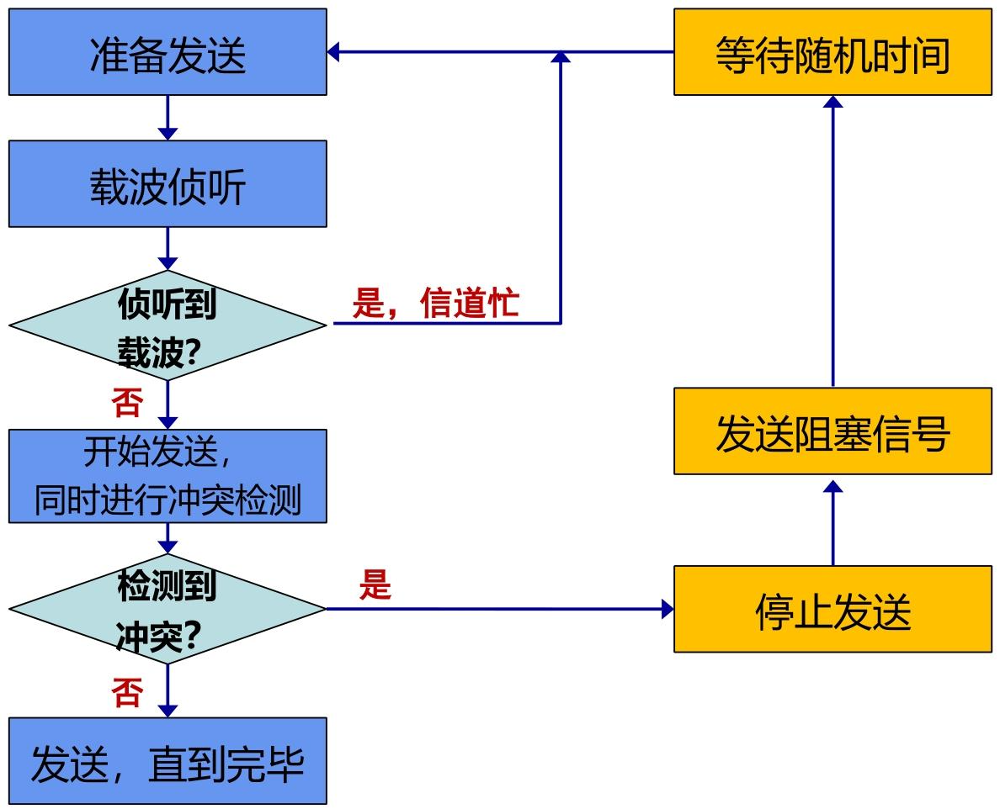
关键在于冲突检测窗口与最短帧长
（1）冲突检测窗口（争用期）
- 以太网的端到端往返时延（2T），即信号从一个站点传到最远站点再返回的时间。
- 核心逻辑：若发送方在 “2T” 内未检测到冲突，说明该帧发送不会与其他站点冲突（所有站点已感知信道忙碌）。
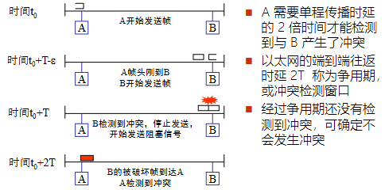
（2）最短帧长
- 定义：争用期（2T）内可传输的比特数，确保发送方在检测到冲突前，已发送足够长的帧，避免冲突后无法通知其他站点。
- 计算公式：Lmin=2t×R（t=D/V即传播时延，D 为最大距离，V 为信号传播速度，R 为传输速率）。也可以是两倍的时延带宽积
- 实例：10Mbps 以太网的争用期可传输 512bit（64 字节），因此规定最短有效帧长为 64 字节；长度＜64 字节的帧均为冲突中止的无效帧。
而对于冲突重试则需要采用二进制指数退避算法
发生冲突的站点停止发送数据,并发送完阻塞信号；为降低再次冲突概率，站点冲突后按以下规则等待重试：
- 基本退避时间 = 争用期（2T）。
- 第 k 次冲突时，从 [1, 2^k] 中随机取 r，退避时间 = t = r×2T。
- k=Min (重传次数，10)：重传≤10 次时，k = 重传次数；重传达 16 次仍失败，丢弃帧并向上层报错。
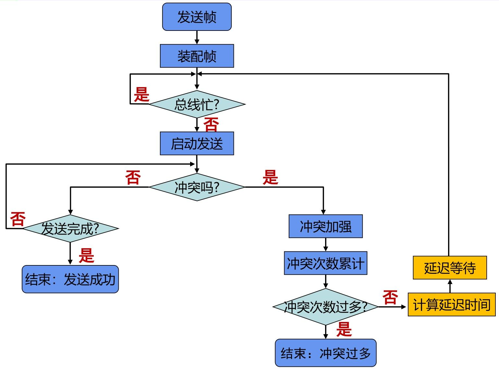
[!note]
- CSMA 是 “预防冲突” 的基础机制，靠 “侦听 + 避让” 减少冲突，但无法完全避免。
- CSMA/CD 是以太网的完整解决方案，通过 “侦听（CS）+ 共享访问（MA）+ 冲突检测（CD）+ 退避重传”，实现共享信道的有序通信。
- 适配早期两个以上站点共享信道、各站点之间以半双工方式进行通信的以太网即一个冲突域
以太网帧结构
以太网 MAC 帧的核心是两种标准格式，通过 “长度 / 类型” 字段区分，其中 Ethernet II（DIX V2）是目前最常用的格式
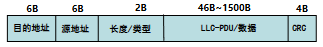
区分依据：2 字节 “长度 / 类型” 字段
- Ethernet II 标准（DIX V2）：字段值 > 0X0600（十进制 1536），此时该字段是 “类型字段”，标识上层协议类型。
IEEE 802.3 标准：字段值 ≤ 0X0600，此时该字段是 “长度字段”，标识后续数据字段的字节数。
Ethernet II 帧
前导码（7B） + 帧起始定界符（1B） + 目的地址（6B） + 源地址（6B） + 类型字段（2B） + 数据字段（46B~1500B） + 帧校验（4B）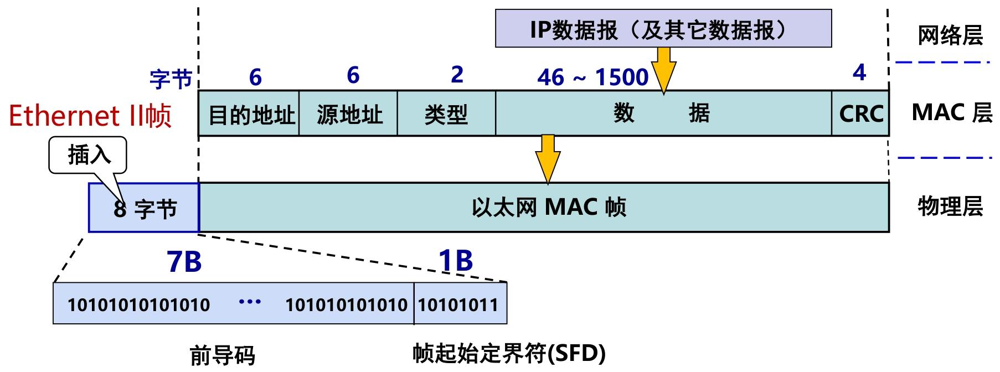
目的地址 + 源地址（MAC 地址6B）：硬件地址（物理地址），全球唯一，固化在网卡（NIC）中
前 3 字节为 “组织唯一标识符（OUI）”（IEEE 分配给厂商），后 3 字节为 “扩展唯一标识符”（厂商自行分配，确保无重复）
MAC地址分三种:单播地址､组播地址和广播地址：规定地址字段的第一字节的最低位用于标识单播还是组播地址
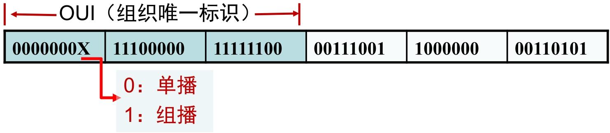
类型字段（2 字节）：指明上层协议，让接收方将数据交给正确的网络层协议。
数据字段（46B~1500B）：上层协议的 PDU（如 IP 数据报、ARP 报文）。
帧校验字段（FCS，4 字节）：差错检测，采用 CRC-32 校验算法。
过时格式：IEEE 802.3 帧
目的地址（6B） + 源地址（6B） + LLC-PDU长度（2B） + LLC-PDU（46B~1500B） + 帧校验（4B）- 核心区别：将 “类型字段” 改为 “LLC-PDU 长度字段”，数据字段必须封装 LLC 帧（含 DSAP、SSAP、控制字段），再承载网络层数据。
无效 MAC 帧判定（64B~1518B 为有效帧长度）
满足以下任一条件即为无效帧，接收方直接丢弃，不重传：
- 数据字段长度与 “长度字段”（IEEE 802.3）的值不一致；
- 帧总长度不是整数个字节；
- CRC 校验结果与帧校验字段不匹配（帧损坏）；
- 数据字段长度不在 46B~1500B 之间（未满足最小填充或超过 MTU）。
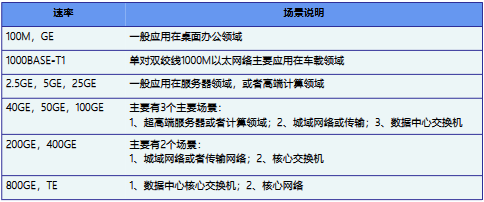
无线局域网
无线局域网（WLAN）是采用无线通信技术覆盖局部地理范围的网络，核心基于 IEEE 802.11 协议簇，Wi-Fi 是其通俗统称（二者意义等同），核心特点是无物理线缆、支持移动接入，半双工通信，同一时刻仅一台设备可发送需排队等待
WLAN 可分为两大类： 有固定基站的 WLAN；无固定基站的 WLAN
无线局域网标准
IEEE 802.11 标准定义了 3 种物理层介质，适配不同传输场景：
- 跳频扩展频谱（FHSS）：通过快速切换频率避免干扰，适用于早期低速传输。
- 直接序列扩展频谱（DSSS）：将数据信号与伪随机序列叠加传输，抗干扰能力强，802.11b 采用此技术。
- 红外线（IR）：利用红外光传输，受遮挡影响大，适用短距离无遮挡场景。
正交频分复用（OFDM），从 802.11a/g 开始普及，通过将信道划分为多个子信道并行传输，提升抗干扰能力与传输速率
很多无线局域网适配器做成双模（802.11a/g)或三模(802.11a/b/g或802.11b/g/n)
对于802.11b；802.11g；802.11a三类主流标准
| 对比维度 | 802.11b | 802.11g | 802.11a |
|---|---|---|---|
| MAC 协议 | 均采用 CSMA/CA（载波侦听多路访问 / 冲突避免），因无线信道冲突检测困难，通过 “预约信道 + ACK 确认” 避免冲突 | ||
| 工作频率 | 2.4GHz（开放频段，易受蓝牙、微波炉等干扰） | 2.4GHz（与 802.11b 兼容） | 5GHz（频段干净，干扰少，但覆盖范围略小） |
| 物理编码 | DSSS | DSSS（兼容 802.11b）或 OFDM（高速传输） | OFDM |
| 最高速率 | 11Mbps | 54Mbps | 54Mbps |
| 兼容性 | 向下兼容 802.11 标准 | 向下兼容 802.11b/g | 不兼容 802.11b，需双模 / 三模适配器互通 |
拓扑结构
基本服务集（BSS）是无线局域网（WLAN）的最小功能单元
本质是 “一组共享同一无线链路、遵循相同 MAC 协议的站点集合”，所有站点通过竞争方式使用信道，核心分为 “独立 BSS” 和 “有 AP 的 BSS” 两类
| 对比维度 | 有 AP 的 BSS（基础设施 BSS） | 独立 BSS（IBSS/Ad-Hoc） |
|---|---|---|
| 核心设备 | 必须有 AP（中心节点） | 无 AP，仅站点对等连接 |
| 拓扑结构 | 星形（站点→AP→站点） | 网状（站点直接互连） |
| 控制方式 | AP 集中控制信道、接入 | 站点自主竞争，无中心控制 |
| 覆盖范围 | 较大（由 AP 功率决定） | 较小（由站点信号决定） |
| 扩展能力 | 强（多 BSS 可互连） | 弱（仅局限于少量站点） |
| 典型场景 | 家庭、办公、公共场所 Wi-Fi | 临时文件共享、应急通信 |
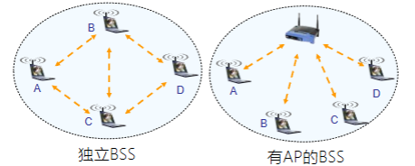
WLAN 协议栈
WLAN（无线局域网）协议栈核心遵循 IEEE 802 标准，与有线以太网（802.3）上层完全兼容，仅在数据链路层（MAC 子层）和物理层适配无线信道特性
同时通过 MAC 层双工作模式、帧间间隔（IFS）、专用 MAC 帧结构保障无线传输有序可靠
WLAN 与 有线以太网
- 上层（应用层→网络层）：WLAN 与有线以太网完全共用，无需额外适配，比如电脑连接 Wi-Fi 或网线，浏览器、办公软件的使用体验一致。
- 下层（数据链路层→物理层）：因传输介质不同（无线开放信道 vs 有线封闭信道），MAC 子层的冲突处理机制（CSMA/CA vs CSMA/CD）、帧结构，以及物理层的信号处理方式存在本质区别。
WLAN MAC层
WLAN MAC 层通过 “争用 + 无争用” 双模式，适配不同优先级数据传输，避免无线信道冲突：
争用服务：分布协调功能（DCF）
- 基于 CSMA/CA（载波侦听多路访问 / 冲突避免），是 WLAN 默认工作模式。
- 站点发送数据前先侦听信道，空闲则等待帧间间隔（IFS）后发送；忙则持续侦听，待信道空闲后按退避算法重试，通过 RTS/CTS（信道预约）和 ACK 确认避免冲突。
- 适用场景：普通数据传输（如网页浏览、文件下载），分布式竞争，无需集中控制。
无争用服务：点协调功能（PCF）
- 集中控制，由接入点（AP）主导分配信道使用权。
- AP 通过轮询方式，依次允许各站点发送数据，站点无需竞争信道，直接在分配时隙内传输。
- 适用场景：高优先级数据（如语音通话、视频会议），无冲突、低延迟，依赖 AP 的集中调度。
帧间间隔（IFS）
IFS 是站点发送帧后的强制等待时间，通过长度差异划分帧优先级，减少冲突概率：
- 帧间间隔长度取决于该站欲发送的帧的类型
- 优先级越高，等待时间越短，越容易抢占信道；低优先级帧若遇高优先级帧发送，需重新等待，避免冲突。
| IFS 类型 | 中文名称 | 长度关系 | 适用帧类型 | 核心作用 |
|---|---|---|---|---|
| SIFS | 短帧间间隔 | 最短（基础单位） | ACK 帧、CTS 帧、分片后的数据帧、AP 查询响应帧、PCF 模式下 AP 发送的帧 | 保障同一对话的帧连续传输（如数据帧 + ACK 帧），站点可快速切换收发状态 |
| PIFS | 点协调功能帧间间隔 | SIFS + 1 个时隙 | PCF 模式下 AP 发送的轮询帧、控制帧 | 确保 AP 在 PCF 模式下优先抢占信道，主导无争用传输 |
| DIFS | 分布协调功能帧间间隔 | PIFS + 1 个时隙 | DCF 模式下的普通数据帧、管理帧（认证帧、关联帧等） | 普通数据传输的默认间隔，平衡信道利用率与冲突概率 |
802.11 MAC 帧结构
MAC 帧是 WLAN 数据传输的基本单元，首部（30 字节）包含关键控制信息，适配 AP 转发场景
- 帧控制： 含协议版本（固定为 0）、帧类型（管理 / 控制 / 数据）、子类型（认证 / 探测 / ACK 等）、传输方向（到 DS / 从 DS）等
- 持续期：标识信道占用时间，其他站点通过此字段设置 NAV，避免冲突
示例
- A→AP：到 DS=1、从 DS=0，地址 1=AP 的 MAC、地址 2=A 的 MAC、地址 3=B 的 MAC；
- AP→B：到 DS=0、从 DS=1，地址 1=B 的 MAC、地址 2=AP 的 MAC、地址 3=A 的 MAC；
CSMA/CA协议
为什么不采用有限以太网的CSMA/CD协议？
无线设备难以同时收发信号；CSMA/CD 的核心逻辑是 “发送数据的同时检测冲突”；
冲突检测方式不兼容无线信道；无线信道是开放介质，信号易受干扰、衰减、反射，无法通过单一物理指标（如电压）判断冲突
隐蔽站问题导致冲突检测失效
- 站点 A 和 C 都在站点 B 的通信范围，但 A 和 C 互不可见（信号覆盖无重叠），A 和 C 检测信道时均认为 “空闲”，同时向 B 发送数据，导致信号在 B 处冲突，但 A 和 C 无法检测到（因彼此信号无法到达）。
- CSMA/CD 的 “冲突检测” 仅能感知本地信道状态，无法解决远距离站点的隐蔽冲突，导致冲突频繁且无法及时处理。
暴露站问题
- 站点 B 向 A 发送数据，站点 C 检测到信道有信号（B 的传输），误以为自己无法发送数据（实际 C 向 D 发送数据不会干扰 B→A 的传输），导致信道利用率下降。
- 关键：暴露站问题不影响协议正常工作，但说明无线信道的 “忙闲状态” 无法通过简单侦听判断
CSMA/CA 的核心是 “提前避免冲突”，而非 “冲突后处理”
- 站点有数据要发送时，先侦听信道（能量 / 载波检测）。
- 信道空闲：等待帧间间隔（IFS）后再次侦听，仍空闲则发送数据。
- 信道忙碌：持续侦听至传输结束，等待 IFS 后，按 “二进制指数退避算法” 随机等待一段时间，再重新侦听发送。
二进制指数退避算法（减少重复冲突）
- 第 i 次退避就在
2^(2 + i)个时隙中随机地选择一个 - 第 i 次冲突时，退避时隙范围为 {0,1,...,2^(2+i)-1}（第 1 次退避 8 个时隙，第 2 次 16 个时隙，最多 6 次退避后时隙数固定为 255）。
通过随机等待时间，降低多个站点同时抢占信道的概率，避免重复冲突。
信道预约（RTS/CTS 机制）：解决隐蔽站问题
源站点发送数据前，先通过短控制帧预约信道，让周边站点知晓 “信道即将被占用”，主动避让，而非直接发送数据引发冲突。
- RTS（请求发送）：源站发送的短控制帧，包含 3 个关键信息 —— 源 MAC 地址、目的 MAC 地址、本次通信总持续时间（含数据帧发送 + 应答帧接收的全部时间）。
- CTS（允许发送）：目的站响应的短控制帧，会复制 RTS 中的 “持续时间”，告知所有能接收的站点 “信道占用时长”。
- NAV（网络分配向量）：所有站点的 “信道忙闲计时器”，收到 RTS/CTS 后，会将 NAV 设置为帧中指定的持续时间，期间不再侦听信道，直接判定为 “忙”，不发送任何数据。
正向确认(ACK机制）：接收站正确收到数据要发确认帧,否则源站点重复发送数据帧
[!note]
CSMA/CA 的冲突避免技术，是 “主动预约” 与 “被动确认” 的结合：
- RTS/CTS+NAV 机制：提前锁定信道，让周边站点主动避让，从源头避免冲突（尤其是隐藏站冲突）；
- 正向 ACK 机制：事后验证传输结果，解决信号丢失、失真等问题，保障可靠性；
- 两者协同，让无线信道在开放共享的环境下，实现有序、可靠的数据传输，是 WLAN 的核心技术之一。
数据链路层网络互连
数据链路层网络互连的核心是通过网桥和二层交换机两种设备，实现局域网的扩展与互连，解决单局域网覆盖范围有限、主机数量不足的问题，虚拟局域网（VLAN）则进一步优化互连后的网络性能与安全性
网桥
网桥是工作在物理层和数据链路层的局域网互连设备，在数据链路层进行帧的存储与转发，专门用于连接不同类型或不同网段的局域网
网桥属于 DCE 级端到端连接，是局域网间的 “桥梁”，仅用于局域网互连，不涉及广域网。
网桥同时作用于 OSI 的物理层和数据链路层，底层适配物理链路，上层聚焦帧的处理与转发。
网桥的核心组成的是实现帧处理与转发的关键
- 站表：存储站点地址与对应接口的映射关系，用于判断帧的转发路径。
- 接口管理软件：管理网桥的物理接口，适配不同网段的物理层特性。
- 网桥协议实体：核心处理单元，负责帧的接收、解析、路由判断与转发。
- 缓存：接口 1 和接口 2 分别对应两个互连的网段（如网段 A、网段 B），用于临时存储待转发的帧，缓解传输速率差异带来的冲突。
网桥的优势：过滤通信量仅仅转发网段的数据；连接多个局域网扩大了物理范围；可互连不同物理层、不同 MAC 子层和不同速率的局域网
网桥的缺点：增加存储转发时延特别是异构网段互连；MAC子层无法流量控制
网桥的功能
网桥的核心价值是 “精准转发、适配异构、隔离冲突”
帧路由：按目的地址精准转发
- 网桥就像 “局域网间的交通指挥员”，收到帧后先查看帧的目的 MAC 地址，再通过自身的 “站表”（记录站点地址与对应网段的映射）判断该帧是否需要跨网段传输。
- 若目的站点与发送站点在同一网段，网桥直接丢弃该帧，不转发，避免冗余流量；
错误检测
- 网桥接收帧后，会通过 CRC 校验等方式检查帧的完整性（如比特错误、帧格式异常）
- 若检测到错误帧，直接丢弃，不转发到其他网段，保障跨网段传输的数据可靠性
帧格式转换
- 不同局域网的 MAC 子层协议可能不同（如以太网 802.3、令牌总线 802.4），对应的帧格式也有差异，网桥可在数据链路层完成帧格式转换
隔离通信：划分独立冲突域
网桥将互连的多个局域网划分为独立的 “冲突域”，每个网段内的设备竞争信道时，不会影响其他网段，减少跨网段的冲突概率
网桥路由
网桥决定转发哪个帧和往哪儿转发的过程被称为路由
路由表是网桥转发决策的依据，记录 “目标站点 - 下一局域网” 的映射关系，网桥接收帧后，通过查询目标站点对应的条目，决定是否转发及转发到哪个局域网。
仅转发跨局域网的帧，同一局域网内的帧直接丢弃
三类核心路由算法
固定路由算法（静态路由）
- 路由表由人工手工配置，配置完成后固定不变，不支持动态调整。
- 适用于拓扑稳定、站点数量少的小型网络。
透明路由算法（动态路由，IEEE 802.1D 标准）
“透明” 指站点无需知晓网桥存在，网桥自动完成路由表生成与维护，是目前最常用的路由算法，核心包含 “逆向学习” 和 “生成树协议（STP）” 两大机制。
逆向学习（路由表自动生成与修改）
自动修改和生成路由表的能力称为路由学习或地址学习
- 路由表初始化：网桥刚启动时路由表为空，收到未知目标站点的帧时，采用 “扩散算法”，向所有连接的局域网广播该帧，确保目标站点能收到。
- 自动学习：网桥接收帧时，提取帧的 “源 MAC 地址” 和 “入端口对应的局域网”，更新路由表（如从 L1 收到 A 发送的帧，记录 “A- L1”）。
- 动态更新：路由表项带定时器，超时未收到该站点的帧则删除表项；表项满时，通过替换算法淘汰不常用表项，适配动态拓扑。
生成树协议（STP）—— 解决帧循环问题
[!important]
多网桥互连易形成网络环路，导致帧循环转发（广播风暴），阻塞网络。
不改变物理拓扑，逻辑上阻断冗余链路，形成无环路的树状结构，冗余链路作为备份。
- 选择 “树根”：确定一个核心设备（根网桥），作为所有帧转发的起点；
- 确定最短路径：所有站点到根网桥的路径唯一且最短，避免多路径导致循环；
- 阻塞冗余链路：将多余的环路链路逻辑关闭（端口阻塞），仅保留最优路径，形成无环路的树状拓扑；
- 冗余备份：被阻塞的链路仍作为备份，当最优路径故障时自动激活。
STP 是专门解决帧循环的二层协议，通过自动选举和端口控制，实现无环路拓扑，核心流程如下：
- BPDU：网桥间的 “通信语言”，用于传递拓扑信息（如网桥 ID、路径费用）；
- 根网桥：树状结构的 “根”，由网桥 ID（唯一标识）决定，ID 最小的网桥当选；
- 根端口：每个非根网桥中 “到根网桥路径最短” 的端口，负责接收根网桥方向的帧；
- 指定端口：每个局域网中 “到根网桥路径最短” 的端口，负责转发该局域网的帧；
阻塞端口：既非根端口也非指定端口的端口，逻辑关闭，仅监听不转发数据帧（冗余备份）。
STP 工作流程（三步构建无环路拓扑）
（1）第一步：选举根网桥（确定树状结构的根节点）
- 所有网桥启动后，通过 BPDU 广播自身 ID；
- 网桥接收 BPDU 后，对比 ID 大小，最终ID 最小的网桥当选根网桥（如文档示例中 ID 为 41.13.92 的 B92）。
（2）第二步：非根网桥选举根端口（确定到根的最优路径）
每个非根网桥选择 1 个 “到根网桥路径费用最低” 的端口作为根端口，选举优先级：
- 路径费用最低（带宽越大，费用越低）；
- 费用相同时，选发送方网桥 ID 最小的；
- 仍相同时，选发送方端口 ID 最小的。
（3）第三步：为每个局域网指定网桥与指定端口（确定唯一转发端口）
- 每个局域网需选举 1 个 “指定网桥” 和 1 个 “指定端口”，确保该局域网的帧仅通过唯一端口转发，避免环路
- 剩余端口自动设为 “阻塞端口”，逻辑关闭，仅监听 BPDU，不转发数据帧；
源路由算法（动态路由）
路由由 “源站点” 决定，而非网桥：源站点通过 “路由探索” 确定到目标站点的路径，将路由信息（局域网号 + 网桥 ID 序列）封装在帧的路由字段中。
网桥仅按帧中路由指示转发：接收帧后，提取下一个路由指示，转发到对应局域网，无需自主决策。
路由生成又称 “路由探索（route discovery）”，是源站点主动查找并确定到目的站点通信路径的过程
- 源站点：全路由广播帧 + 目标站点：非广播响应帧
- 源站点：单路由广播帧（沿生成树）+ 目标站点：全路由广播响应帧
二层交换机
“多端口网桥 + MAC 地址转发 + 隔离冲突域”
工作在 OSI 数据链路层，基于以太网帧的目的 MAC 地址寻址转发，本质是多接口网桥（硬件 ASIC 实现，比传统网桥更快）
替代集线器、隔离冲突域、提升带宽利用率，是局域网的核心接入与互联设备。
端口与双工：多端口设计，每端口可接主机 / 交换机，支持全双工（同时收发，带宽翻倍）。
MAC 地址学习与地址 - 端口表
- 收到帧时提取源 MAC，绑定到入端口并写入地址表，超时自动删除，适配主机移动。
- 转发决策：查地址表，命中则单端口转发；未命中则广播（泛洪），收到回应后更新表项。
交换引擎：硬件交换矩阵 / 总线，实现多端口并行转发，保障并发通信效率。
冲突域隔离：每个端口是独立冲突域，消除带宽竞争；对比集线器所有端口共享 1 个冲突域、N 用户平均带宽 B/N，交换机每个用户独占端口带宽 B。
三类转发模式（延迟与可靠性的平衡）
| 转发模式 | 触发条件 | 核心优点 | 核心缺点 |
|---|---|---|---|
| 直通式 | 读取目的 MAC 即转发 | 延迟最小，速度最快 | 无 CRC 校验，可能转发错误帧；没有缓存不支持速率适配 |
| 存储转发 | 收完帧并做 CRC 校验 | 过滤错误帧，支持多速率端口 | 延迟大（需缓存完整帧） |
| 无碎片 | 收到 64 字节（最小帧长）后转发 | 过滤冲突碎片，兼顾速度与基础可靠性 | 无 CRC 校验，无法完全避免错误帧 |
链路层互连的核心优点
- 即插即用
- 无冲突通信：单播帧独占信道，无 CSMA/CD 冲突，提升吞吐。
- 带宽独享：端口专属带宽，无竞争，适配高带宽需求主机。
- 多速率适配
虚拟局域网(VLAN)
以太网交换机互连的网络本质是 “单广播域 + 多冲突域” 的架构，这会带来性能与安全问题，而虚拟局域网（VLAN）通过 “逻辑分组” 解决该问题
交换机的冲突域与广播域的区别
- 冲突域：交换机每个接口是独立冲突域（主机通信无碰撞），这是交换机的核心优势；
- 广播域：交换机互连的所有主机共享同一个广播域—— 当交换机收到未知目的 MAC 的帧时，会向所有接口广播该帧，网络中所有主机都能接收到，因此属于广播网络。
如果整个网络在同个广播域：大量广播报文转发影响网络性能，同时用户信息安全有风险
针对上述问题的解决方法:虚拟局域网(VLAN)
虚拟局域网（VLAN）是遵循 IEEE 802.1Q 标准的二层网络技术，核心是打破物理位置限制，将局域网内的主机按逻辑需求划分为独立广播域，解决传统交换机单广播域的性能与安全问题
从而缩小广播域；提升网络安全，简化网络管理，扩大网络规模
VLAN 的核心定义与本质
VLAN是由局域网网段构成的与物理位置无关的逻辑组，组内网段有共同特征和需求。
- 逻辑分组，非物理分组：不依赖主机的物理接入位置，同一办公室的主机可分属不同 VLAN，不同楼层的主机也可划入同一 VLAN。
- 广播域隔离：同一 VLAN 内的主机处于同一广播域，链路层可直接通信；不同 VLAN 的主机链路层相互隔离，需通过三层设备（路由器 / 三层交换机）才能通信。
- 帧标识唯一：每个 VLAN 的帧都携带专属标识符（VLAN Tag），交换机通过该标识识别帧所属 VLAN，实现精准转发。
虚拟局域网（VLAN）划分
交换机支持多种 VLAN 划分方式，核心分为静态划分和动态划分两类，适配不同网络场景：
| 划分方法 | 核心逻辑 | 技术层级 | 优点 | 缺点 | 典型场景 |
|---|---|---|---|---|---|
| 基于端口（静态划分） | 将交换机的物理端口与 VLAN 强制绑定，端口接入的主机自动归属对应 VLAN | 第一层（物理层） | 配置最简单、最常用，转发效率高 | 主机移动时需重新配置端口（如主机从端口 1 换到端口 2，需修改端口的 VLAN 绑定） | 拓扑稳定的场景（如企业部门固定工位、服务器集群） |
| 基于 MAC 地址（动态划分） | 按主机网卡的 MAC 地址划分 VLAN，交换机内置 “MAC 地址 - VLAN” 映射表 | 第二层（数据链路层） | 支持主机自由移动，更换端口无需重新配置 | 需录入大量 MAC 地址，管理维护成本高；主机更换网卡后需更新映射表 | 主机移动频繁的场景（如会议室移动终端、办公笔记本） |
| 基于协议类型 | 按以太网帧的 “类型” 字段划分（如区分 IP、IPX 协议帧） | 第二层（数据链路层） | 适配多协议共存的网络，自动识别协议类型归类 | 协议类型单一的网络中无意义，灵活性有限 | 传统多协议混合组网场景（如老旧企业网同时运行 IP 和 IPX） |
| 基于 IP 子网 | 按主机的 IP 子网地址划分（如 192.168.1.0/24 划入 VLAN 10，192.168.2.0/24 划入 VLAN 20） | 第三层（网络层） | 与 IP 子网规划联动，适配网络分层设计，主机 IP 变更时可自动归类 | 依赖 IP 地址，对非 IP 协议不支持 | 按业务网段划分的企业网、数据中心网络 |
| 基于高层应用 / 服务 | 按主机的应用类型或服务划分（如 FTP 服务划入 VLAN 10，Telnet 服务划入 VLAN 30） | 高层（传输层 / 应用层） | 灵活性最高，可精准匹配业务需求 | 配置复杂，需识别应用特征，对交换机性能要求高 | 对业务隔离性要求高的场景（如企业核心业务与普通办公业务隔离） |
802.1Q 帧标签（VLAN Tag）
传统以太网帧无 VLAN 标识，交换机通过插入 4 字节 VLAN Tag实现 VLAN 识别，遵循 IEEE 802.3ac 标准